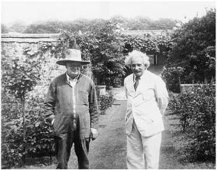

With Winston Churchill at his home, Chartwell, 1933
与温斯顿·丘吉尔在查特威尔庄园，1933年
“Bird of Passage” “迁徙之鸟”
“Today I resolved to give up my Berlin position and shall be a bird of passage for the rest of my life,” Einstein wrote in his travel diary. “I am learning English, but it doesn’t want to stay in my old brain.”1
今天我决心放弃我在柏林的职位，在余生做一只迁徙之鸟，爱因斯坦在旅行日记中写道，“我正在学英语，但它不愿留在我的大脑里。”
It was December 1931, and he was sailing across the Atlantic for a third visit to America. He was in a reflective mood, aware that the course of science might be proceeding without him and that events in his native land might again make him rootless. When a ferocious storm, far greater than any he had ever witnessed, seized his ship, he recorded his thoughts in his travel diary. “One feels the insignificance of the individual,” he wrote, “and it makes one happy.”2
此时是1931年12月，爱因斯坦正横渡大西洋，第三次访问美国。他知道，也许科学将在没有他的情况下继续发展，祖国发生的事情可能会再次让他无所归属。此时，一场他所经历的最猛烈的暴风雨袭击了他的船，他在旅行日记中记下了当时的感受。“人感受到了个体的无足轻重，”他写道，“这使人幸福。”
Yet Einstein was still torn about whether to forsake Berlin for good. It had been his home for seventeen years, Elsa’s for even longer. Despite the challenge from Copenhagen, it was still the greatest center for theoretical physics in the world. For all of its dark political undercurrents, it remained a place where he was generally loved and revered, whether he was holding court in Caputh or taking his seat at the Prussian Academy.
然而，爱因斯坦依然在犹豫是否要永远放弃柏林。他在那里安家落户已经17年了，爱尔莎居住的时间就更长。虽然有来自哥本哈根的挑战，柏林仍然是世界理论物理学的中心。尽管存在着各种政治的污泥浊水，但他仍然对那个地方充满感情和敬意。他不仅在卡普特拥有宅第，而且在普鲁士科学院也有席位。
In the meantime, his options continued to grow. This trip to America was for another two-month visiting professorship at Caltech, which Millikan was trying to turn into a permanent arrangement. Einstein’s friends in Holland had for years also been trying to recruit him, and now so too was Oxford.
与此同时，他的选择一直在增加。这次去美国是到加州理工学院再做两个月的访问教授，密立根正努力使这项安排成为常规。荷兰的朋友也一直劝他加盟，现在又有了牛津。
Soon after he settled into his rooms at the Athenaeum, the graceful faculty club at Caltech, yet another possibility arose. One morning, he was visited there by the noted American educator Abraham Flexner, who spent more than an hour walking the cloistered courtyard with him. When Elsa found them and summoned her husband to a luncheon engagement, he waved her off.
他住进加州理工学院优美雅致的教工俱乐部“雅典娜饭店”（Athenaeum）之后不久，出路又多了一条。一天早上，著名美国教育家亚伯拉罕·弗莱克斯纳来访，两人在庭院回廊里散了一个多小时的步。当爱尔莎找到他们，招呼丈夫参加午宴时，爱因斯坦摆了摆手。
Flexner, who had helped reshape American higher education as an officer of the Rockefeller Foundation, was in the process of creating a “haven” where scholars could work without any academic pressures or teaching duties and, as he put it, “without being carried off in the maelstrom of the immediate.”3 Funded by a $5 million donation from Louis Bamberger and his sister Caroline Bamberger Fuld, who had the good fortune to sell their department store chain just weeks before the 1929 stock market crash, it would be named the Institute for Advanced Study and located in New Jersey, probably next to (but not formally affiliated with) Princeton University, where Einstein had already spent some enjoyable time.
弗莱克斯纳曾经是洛克菲勒基金会的一名官员，帮助改造了美国的高等教育，现在他正在为学者们搭建一个“象牙塔”，在那里可以自由地工作，没有任何学术压力或教学任务，正如他所说，“不会受繁杂的实际事务的牵累”。 路易斯·班伯格和他的妹妹卡罗琳·班伯格·富尔德为之捐赠了500万美元（他们在1929年股票市场崩盘的前几周卖掉了他们的连锁百货商店，从而发了大财），它将被命名为高等研究院，位于新泽西州，也许挨着（但不隶属于）普林斯顿大学，爱因斯坦曾在那里度过了一段愉快的时光。
Flexner had come to Caltech to get some ideas from Millikan, who (to his later regret) insisted he talk to Einstein. When Flexner finally set up such a meeting, he was impressed, he later wrote, with Einstein’s “noble bearing, simply charming manner, and his genuine humility.”
弗莱克斯纳已经征求过密立根的意见，密立根（后来很后悔）让他与爱因斯坦面谈。弗莱克斯纳后来写到，当他们最终见面时，爱因斯坦“高贵的举止、迷人的风度和真正的谦卑”给他留下了深刻的印象。
It was obvious that Einstein would be a perfect anchor and ornament for Flexner’s new institute, but it would have been inappropriate for Flexner to make an offer on Millikan’s home turf. Instead, they agreed that Flexner would visit Einstein in Europe to discuss matters further. Flexner claimed in his autobiography that, even after their Caltech meeting, “I had no idea that he [Einstein] would be interested in being connected to the Institute.” But that was belied by the letters he wrote to his patrons at the time, in which he referred to Einstein as an “unhatched chicken” whose prospects they needed to treat circumspectly.4
显然，对于弗莱克斯纳的新研究院来说，爱因斯坦无疑是完美的精神支柱，定会使之身价倍增，但要让弗莱克斯纳在密立根的地盘发出邀请，也许不太合适。弗莱克斯纳与爱因斯坦商定，他们将在欧洲继续商量这件事。弗莱克斯纳在其自传中称，在这次会面之后，“我并不知道他（爱因斯坦）有兴趣加盟研究院”。但这种说法被他当时写给其赞助人的信所否证，他在信中称，爱因斯坦是一只“未孵出的小鸡”，其前景他们需要慎重对待。
By then Einstein had grown slightly disenchanted with life in southern California. When he gave a speech to an international relations group, in which he denounced arms-control compromises and advocated complete disarmament, his audience seemed to treat him as celebrity entertainment. “The propertied classes here seize upon anything that might provide ammunition in the struggle against boredom,” he noted in his diary. Elsa reflected his annoyance in a letter to a friend. “The affair was not only lacking in seriousness but was treated as a kind of social entertainment.”5
那时，爱因斯坦对南加州的生活已经没有那么大兴趣了。他曾为一个国际关系团体做过一次讲演，在讲演中，他谴责在军控方面做出妥协，主张完全裁军，而听众却似乎把这当成了名人的娱乐表演。“这里的有产阶级总是把任何东西都当成消遣解闷的手段。”他在日记中写道。爱尔莎在给朋友的信中也反映了他的懊恼。“这件事情不仅不够严肃，而且被当成一种社会消遣。”
As a result, he was dismissive when his friend Ehrenfest in Leiden wrote to ask for his help in getting a job in America. “I must tell you honestly that in the long term I would prefer to be in Holland rather than in America,” Einstein replied. “Apart from the handful of really fine scholars, it is a boring and barren society that would soon make you shiver.”6
结果，当莱顿的朋友埃伦菲斯特请他帮忙在美国找份工作时，他没有答应。“我必须坦率地告诉你，从长远考虑，我更愿意待在荷兰而不是美国，”爱因斯坦回信说，“除了有几位真正优秀的学者外，整个社会枯燥乏味，令人厌烦，很快就会使你心灰意冷。”
Nevertheless, on this and other topics Einstein’s mind was not a simple one. He clearly enjoyed America’s freedom, excitement, and even (yes) the celebrity status it conferred upon him. Like many others, he could be critical of America yet also attracted to it. He could recoil at its occasional displays of crassness and materialism, yet find himself powerfully drawn to the freedoms and unvarnished individuality that were on the flip side of the same coin.
然而，在如此等等的话题上，爱因斯坦的想法并不那么单纯。他显然喜欢美国的自由、热情，甚至是赋予他的名人地位（事实也的确如此）。和许多人一样，他在批评美国的同时也被它吸引。他可能不满于美国偶尔表现出的粗俗愚钝和物质至上主义，但另一方面又会被它的自由和率真的个性所强烈吸引。
Soon after returning to Berlin, where the political situation had become even more unnerving, Einstein went to Oxford to give another series of lectures. Once again, he found its refined formality oppressive, especially in contrast to America. At the stultifying sessions of the governing body of Christ Church, his college at Oxford, he sat in the senior common room holding a notepad under the tablecloth so that he could scribble equations. He came to realize, once again, that America, for all of its lapses of taste and excesses of enthusiasm, offered freedoms he might never find again in Europe.7
就在回到柏林后不久，那里的政治形势变得愈发紧张，爱因斯坦又到牛津做了几场讲演。他再一次觉得那些优雅的礼节让人难以忍受，与美国的反差就更强烈。在基督教会学院管理机构沉闷的会议上，爱因斯坦坐在资深教授共宴厅里，把笔记本拿到桌布下面演算方程。他又一次认识到，尽管美国品位不高，热情过度，却可以带来在欧洲无法享受的自由。
Thus he was pleased when Flexner came, as promised, to continue the conversation they had started at the Athenaeum. Both men knew, from the outset, that it was not merely an abstract discussion but part of an effort to recruit Einstein. So Flexner was a bit disingenuous when he later wrote that it was only while they were pacing around the manicured lawns of Christ Church’s Tom Quad that it “dawned on me” that Einstein might be interested in coming to the new institute. “If on reflection you conclude that it would give you the opportunities that you value,” Flexner said, “you would be welcome on your own terms.”8
于是，他很高兴弗莱克斯纳能够如约而至，继续他们在“雅典娜饭店”没有完成的谈话。从一开始，两人就知道这并不是一次抽象的讨论，而是招募爱因斯坦的重要一步。弗莱克斯纳后来说，只是当他们围绕着基督教会学院汤姆方庭（Tom Quad）的草坪散步时，“我才意识到”爱因斯坦也许有兴趣来新研究院，这种说法有些言不由衷。“如果您在考虑之后认为它能够提供合适的机会，”弗莱克斯纳说，“我们随时恭候您的光临，并会依照您提出的条件行事。”
The arrangement that would bring Einstein to Princeton was concluded the following month, June 1932, when Flexner visited Caputh. It was cool that day, and Flexner wore an overcoat, but Einstein was in summer clothes. He preferred, he joked, to dress “according to the season not according to the weather.” They sat on the veranda of Einstein’s beloved new cottage and spoke all afternoon and then through dinner, up until Einstein walked Flexner to the Berlin bus at 11 p.m.
一个月后，即1932年6月，弗莱克斯纳访问了卡普特，这次爱因斯坦终于决定去普林斯顿。那天天气凉爽，弗莱克斯纳穿着一件大衣，而爱因斯坦还穿着夏装。他开玩笑说，他喜欢“根据季节而不是天气”穿衣服。他们坐在别墅阳台上谈了一下午，吃罢晚餐又继续进行，直到将近晚上11时，爱因斯坦才把弗莱克斯纳送上柏林的公共汽车。
Flexner asked Einstein how much he would expect to make. About $3,000, Einstein tentatively suggested. Flexner looked surprised. “Oh,” Einstein hastened to add, “could I live on less?”
弗莱克斯纳问爱因斯坦希望要多少薪水。3000美元左右吧，爱因斯坦试探性地回答。弗莱克斯纳似乎有些惊讶。“哦，”爱因斯坦连忙说，“是否再少点？”
Flexner was amused. He had more, not less, in mind. “Let Mrs. Einstein and me arrange it,” he said. They ended up settling on $10,000 per year. That was soon increased when Louis Bamberger, the primary backer, discovered that mathematician Oswald Veblen, the Institute’s other jewel, was making $15,000 a year. Bamberger insisted that Einstein’s salary be equal.
弗莱克斯纳乐了。他原以为爱因斯坦的要价会更高。“让爱因斯坦夫人和我安排吧。”他说。最后敲定的酬劳是每年10000美元。而且没过多久又增加了，因为主要赞助人路易斯·班伯格发现研究院的另一座靠山——数学家维布伦每年挣15000美元。班伯格坚持要给爱因斯坦同样的薪水。
There was one additional deal point. Einstein insisted that his assistant, Walther Mayer, be given a job of his own as well. The previous year he had let authorities in Berlin know that he was entertaining offers in America that would provide for Mayer, something Berlin had been unwilling to do. Caltech had balked at this request, as did Flexner initially. But then Flexner relented.9
还有另外一笔交易。爱因斯坦坚持也给他的助手瓦尔特·迈尔安排工作。此前他曾告诉柏林当局，他正在考虑接受美国的邀请，这将为迈尔提供生计，而柏林一直不愿意这样做。加州理工学院拒绝了这一要求。弗莱克斯纳一开始也拒绝了，但最终还是做了妥协。
Einstein did not consider his post at the Institute a full-time job, but it was likely to be his primary one. Elsa delicately broached this in her letter to Millikan. “Will you, under the circumstances, still want my husband in Pasadena next winter?” she asked. “I doubt it.”10
爱因斯坦并未打算在高等研究院全职工作，不过可能主要待在那里。爱尔莎在给密立根的信中委婉地提出了这一点。“在这种情况下，您仍然希望我丈夫明年冬天待在帕萨迪纳吗？”她问道，“我很怀疑。”
Actually, Millikan did want him, and they agreed that Einstein would come back again in January, before the Institute would be open in Princeton. Millikan was upset, however, that he had not finalized a long-term deal, and he realized that Einstein would end up being, at best, an occasional visitor to Caltech. As it turned out, the upcoming January 1933 trip that Elsa helped arrange would end up being his last trip to California.
密立根的确希望。他们商定，爱因斯坦来年1月还会回来，那时普林斯顿的高等研究院还没有开始运作。不过，密立根很后悔当时没有签订长期协议，他意识到，爱因斯坦最后充其量也就是到加州理工学院做一次临时访问。事实证明，爱因斯坦在1933年如期到帕萨迪纳之后再也没有回来过。
Millikan vented his anger at Flexner. Einstein’s connection with Caltech “has been laboriously built up during the past ten years,” he wrote. As a result of Flexner’s pernicious raid, Einstein would be spending his time at some new haven rather than a great center of experimental as well as theoretical physics. “Whether the progress of science in the U.S. will be advanced by such a move, or whether Professor Einstein’s productivity will be increased by such a transfer, is at least debatable.” He proposed, as a compromise, that Einstein split his time in America between the Institute and Caltech.
密立根把一肚子火发到了弗莱克斯纳身上。爱因斯坦与加州理工学院的关系“好不容易在过去的十年里建立起来”，他写到，由于弗莱克斯纳暗挖墙脚，导致爱因斯坦将在某个新的避风港，而不是实验物理学和理论物理学的中心工作。“无论美国科学的进步是否将被这样一个举措所促进，或者是否爱因斯坦教授的生产力会被这样一个变动增加，至少是可以争论的。”作为妥协，他建议爱因斯坦在美国时在研究院和加州理工学院各待一半时间。
Flexner was not magnanimous in victory. He protested, falsely, that it was “altogether by accident” that he ended up in Oxford and speaking to Einstein, a tale that even his own memoirs later contradicted. As for sharing Einstein, Flexner declined. He claimed that he was looking after Einstein’s interests. “I cannot believe that annual residence for brief periods at several places is sound or wholesome,” he wrote. “Looking at the entire matter from Professor Einstein’s point of view, I believe that you and all of his friends will rejoice that it has been possible to create for him a permanent post.”11
面对胜利，弗莱克斯纳显得不够有雅量。他（错误地）抗议说，他到牛津与爱因斯坦谈这件事“完全是出于偶然”。即使他本人后来的回忆录也否定了这种说法。至于让爱因斯坦在两边跑，弗莱克斯纳拒绝了。他说他要照顾爱因斯坦的兴趣。“我认为，每年短期住在几个地方既不合理，对健康也没有好处，”他写道，“从爱因斯坦教授的角度考虑所有这一切，我相信您和他所有的朋友都会为能够给他创造一个永久职位而高兴。”
For his part, Einstein was unsure how he would divide his time. He thought that he might be able to juggle visiting professorships in Princeton, Pasadena, and Oxford. In fact, he even hoped that he could keep his position in the Prussian Academy and his beloved cottage in Caputh, if things did not worsen in Germany. “I am not abandoning Germany,” he announced when the Princeton post became public in August. “My permanent home will still be in Berlin.”
爱因斯坦本人则尚未确定如何安排时间。他认为他也许可以同时在普林斯顿、帕萨迪纳和牛津做访问教授。事实上，倘若德国的形势没有恶化，他甚至希望能够保留他在普鲁士科学院的职位以及卡普特心爱的别墅。“我并非在抛弃德国，”8月他在普林斯顿的职位公布时宣称，“柏林仍将是我永远的家。”
Flexner spun the relationship the other way, telling the New York Times that Princeton would be Einstein’s primary home. “Einstein will devote his time to the Institute,” Flexner said, “and his trips abroad will be vacation periods for rest and meditation at his summer home outside of Berlin.”12
弗莱克斯纳对这种关系的描述是另一个样子，他对《纽约时报》说，普林斯顿将是爱因斯坦主要的家。“爱因斯坦将把时间专用于研究院，”弗莱克斯纳说，“他的国外之旅只是假期期间在他柏林郊外的避暑别墅休息和沉思。”
As it turned out, the issue would be settled by events out of either man’s control. Throughout the summer of 1932, the political situation in Germany darkened. As the Nazis continued to lose national elections but increase their share of the vote, the octogenarian president, Paul von Hindenburg, selected as chancellor the bumbling Franz von Papen, who tried to rule through martial authority. When Philipp Frank came to visit him in Caputh that summer, Einstein lamented, “I am convinced that a military regime will not prevent the imminent National Socialist [Nazi] revolution.”13
后来的结果表明，事件的发展超出了任何一个人的控制。1932年夏，德国的政治形势迅速恶化。纳粹虽然持续在全国选举中落败，但却增加了他们的投票数，以致年逾八旬的总统保罗·冯·兴登堡任命妄自尊大的弗朗茨·冯·巴本为总理，后者试图凭借军事权威进行统治。那年夏天，朋友弗兰克到了卡普特，爱因斯坦悲叹道：“我确信一个军事政权将无法阻止迫近的国家社会主义（纳粹）革命。”
As Einstein was preparing to leave for his third visit to Caltech in December 1932, he had to suffer one more indignity. The headlines about his future post in Princeton had aroused the indignation of the Woman Patriot Corporation, a once powerful but fading group of American self-styled guardians against socialists, pacifists, communists, feminists, and undesirable aliens. Although Einstein fit into only the first two of these categories, the women patriots felt sure that he fit into them all, with the possible exception of feminists.
1932年12月，正当爱因斯坦准备离开德国第三次访问加州理工学院时，他又一次遭到了辱骂。关于他未来在普林斯顿任职的报道引起了“妇女爱国者团体”的愤慨，这是一个美国组织，一度势力很大，但目前正在衰退，自称反对社会主义、和平主义、共产主义、女权主义和不受欢迎的外国人。尽管爱因斯坦只符合前两个范畴，但妇女爱国者们确信他全都符合，也许只有女权主义除外。
The leader of the group, Mrs. Randolph Frothingham (who, given this context, seemed as if her distinguished family name had been conjured up by Dickens), submitted a sixteen-page typed memo to the U.S. State Department detailing reasons to “refuse and withhold such passport visa to Professor Einstein.” He was a militant pacifist and communist who advocated doctrines that “would allow anarchy to stalk in unmolested,” the memo charged. “Not even Stalin himself is affiliated with so many anarcho-communist international groups to promote this ‘preliminary condition’ of world revolution and ultimate anarchy as albert einstein.” (Emphasis and capitalization are in the original.)14
这一团体的领导人弗罗辛厄姆夫人（联系当时的情境，她著名的姓氏就好像是被狄更斯想出来的一样）向国务院递交了一封16页的便函，详细列举了“拒绝并限制给爱因斯坦教授派发这种护照签证”的种种理由。它指责爱因斯坦是一个好战的和平主义者和共产主义者，妄图“让无政府状态在未受侵扰的地方滋生蔓延”“即便是斯大林本人，也没有像阿尔伯特·爱因斯坦这样参与了如此众多的无政府-共产主义国际组织，企图推进世界革命，导致最终的无政府状态”。
State Department officials could have ignored the memo. Instead, they put it into a file that would grow over the next twenty-three years into an FBI dossier of 1,427 pages of documents. In addition, they sent the memo to the U.S. consulate in Berlin so that officers there could interview Einstein and see if the charges were true before granting him another visa.
国务院的官员们可能并没有理会这封信。他们将它置于一个文件夹中，23年后进入了联邦调查局1427页的爱因斯坦档案。他们还把信寄给了美国驻柏林领事馆，希望那里的官员能对爱因斯坦做出审查，在发给他签证之前看看这些指控是否属实。
Initially, Einstein was quite amused when he read newspaper accounts of the women’s allegations. He called up the Berlin bureau chief of United Press, Louis Lochner, who had become a friend, and gave him a statement that not only ridiculed the charges but also proved conclusively that he could not be accused of feminism:
爱因斯坦在报纸上读到了妇女们指控他的报道。一开始他觉得很有趣，便打电话给合众社驻柏林的总编朋友路易斯·洛克纳，发表了一个声明，不仅嘲笑了那些指控，而且决定性地证明不能指责他为女权主义者：
Never yet have I experienced from the fair sex such energetic rejection of all advances, or if I have, never from so many at once. But are they not right, these watchful citizenesses? Why should one open one’s doors to a person who devours hard-boiled capitalists with as much appetite and gusto as the ogre Minotaur in Crete once devoured luscious Greek maidens—a person who is also so vulgar as to oppose every sort of war, except the inevitable one with his own wife? Therefore, give heed to your clever and patriotic women folk and remember that the capital of mighty Rome was once saved by the cackling of its faithful geese.15
我从来没有被女性如此强烈地拒绝过，即使发生过这样的事，也从未像这次这么多人。这些防范意识不俗的女市民们说得不是很对吗？谁会愿意给这样一个人敞开大门呢？他像克里特岛的牛头怪吞食可口的希腊少女一样吞食冷酷无情的资本家，况且这个人又如此鄙俗，以至于除了与妻子进行不可避免的战争之外，还极力反对任何形式的战争。听从你们这些聪明的爱国妇女的建议吧，别忘了，强大的罗马就曾被她那忠实的鹅的嘎嘎乱叫挽救了。
The New York Times ran the story on its front page with the headline, “Einstein Ridicules Women’s Fight on Him Here / Remarks Cackling Geese Once Saved Rome.”16 But Einstein was far less amused two days later when, as he and Elsa were packing to leave, he received a telephone call from the U.S. consular office in Berlin asking him to come by for an interview that afternoon.
《纽约时报》在头版做了报道，还配以大标题——“爱因斯坦嘲笑了这里的妇女对他的攻击/称鹅的嘎嘎乱叫曾经救过罗马”。 然而没过两天，爱因斯坦就没那么开心了。当他和爱尔莎准备离开时，他接到了柏林的美国领事馆办公室打来的电话，要他那天下午来面谈一次。
The consul general was on vacation, so his hapless deputy conducted the interview, which Elsa promptly recounted to reporters.17 According to the New York Times, which ran three stories the next day on the incident, the session started well enough but then degenerated.
总领事当时正在休假，所以由他那位倒霉的代理人进行审查。结束之后爱尔莎立即向记者们做了叙述。 《纽约时报》第二天就此刊登了三篇报道，说他们一开始谈得还不错，但没过多久就产生了不快：
“What is your political creed?” he was asked. Einstein gave a blank stare and then burst out laughing. “Well, I don’t know,” he replied. “I can’t answer that question.”
“您的政治信条是什么？” 爱因斯坦木然凝视，随即放声大笑。“我不知道，”他说，“我不能回答这个问题。”
“Are you a member of any organization?” Einstein ran his hand through “his ample hair” and turned to Elsa. “Oh yes!” he exclaimed. “I am a War Resister.”
“您是某个组织的成员吗？” 爱因斯坦把手放入“乱蓬蓬的头发”，转头看了看爱尔莎。“哦，是的！”他叫道，“我是反战人士。”
The interview dragged on for forty-five minutes, and Einstein became increasingly impatient. When he was asked whether he was a sympathizer of any communist or anarchist parties, Einstein lost his temper. “Your countrymen invited me,” he said. “Yes, begged me. If I am to enter your country as a suspect, I don’t want to go at all. If you don’t want to give me a visa, please say so.”
审查进行了45分钟，爱因斯坦变得愈发不耐烦。在被问到是否同情任何共产党或无政府主义政党时，爱因斯坦火了。“是你的同胞在邀请我，乞求我，”他说，“我可不想作为嫌疑犯到你的国家去。你要是不想给我签证，就说不给。”
Then he reached for his coat and hat. “Are you doing this to please yourselves,” he asked, “or are you acting on orders from above?” Without waiting for an answer, he left with Elsa in tow.
然后他起身拿起外套和帽子。他问道：“你做这些是为了自娱自乐，还是在执行上面的命令？”还没等回答，他就拖着爱尔莎走了。
Elsa let the papers know that Einstein had quit packing and had left Berlin for his cottage in Caputh. If he did not have a visa by noon the next day, he would cancel his trip to America. By late that night, the consulate issued a statement saying that it had reviewed the case and would issue a visa immediately.
爱尔莎对报社说，爱因斯坦不再收拾行装，已经离开柏林回卡普特的别墅了。如果他第二天中午还拿不到签证，就取消美国之行。那天深夜，领事馆发布了一则声明，说已经做了考虑，会立即发放签证。
As the Times correctly reported, “He is not a Communist and has declined invitations to lecture in Russia because he did not want to give the impression that he was in sympathy with the Moscow regime.” What none of the papers reported, however, was that Einstein did agree to sign a declaration, requested by the consulate, that he was not a member of the Communist Party or any organization intent on overthrowing the U.S. government.18
正如《泰晤士报》正确报道的：“他不是一个共产主义者，曾经拒绝到苏联讲演的邀请，因为他不想给人留下同情莫斯科政权的印象。”不过，没有一家报纸披露，爱因斯坦的确在领事馆所要求的一份声明上签了字，表明他不是共产党员，也不是任何旨在颠覆美国政府的组织的成员。
“Einstein Resumes Packing for America,” read the Times headline the next day. “From the deluge of cables reaching us last night,” Elsa told reporters,“we know Americans of all classes were deeply disturbed over the case.” Secretary of State Henry Stimson said that he regretted the incident, but he also noted that Einstein “was treated with every courtesy and consideration.” As they left Berlin by train for Bremer-haven to catch their ship, Einstein joked about the incident and said that all had turned out well in the end.19
“爱因斯坦重新启程赴美。”《泰晤士报》第二天的大标题说。“昨晚我们收到了无数电报，”爱尔莎对记者说，“我们知道美国各界都为这件事深感不安。”国务卿亨利·史汀生说，他为这一事件感到遗憾，但他也指出，爱因斯坦“受到了非常礼貌和周到的对待”。当他们乘火车离开柏林到不来梅港坐船时，爱因斯坦笑着说，最后皆大欢喜。
Pasadena, 1933 帕萨迪纳，1933年
When the Einsteins left Germany in December 1932, he still thought that he might be able to return, but he wasn’t sure. He wrote to his longtime friend Maurice Solovine, now publishing his works in Paris, to send copies “to me next April at my Caputh address.” Yet when they left Caputh, Einstein said to Elsa, as if with a premonition, “Take a very good look at it. You will never see it again.” With them on the steamer Oakland as it headed for California were thirty pieces of luggage, probably more than necessary for a three-month trip.20
1932年12月，当爱因斯坦离开德国时，他仍然认为他或许还能回来，但对此并不确定。他写信给正在巴黎出版他的著作的老友索洛文，要他“来年4月给我在卡普特的住址”寄样书。但在离开卡普特时，爱因斯坦仿佛有一种前兆，他对爱尔莎说：“再好好看一眼吧，你再也见不到它了。”他们在前往加利福尼亚的汽船“奥克兰号”上装了30件行李，这对于三个月的旅行来说，也许多了点。
Thus it was awkward, and painfully ironic, that the one public duty Einstein was scheduled to perform in Pasadena was to give a speech to celebrate German-American friendship. To finance Einstein’s stay at Caltech, President Millikan had obtained a $7,000 grant from the Oberlaender Trust, a foundation that sought to promote cultural exchanges with Germany. The sole requirement was that Einstein would make “one broadcast which will be helpful to German-American relations.” Upon Einstein’s arrival, Millikan announced that Einstein was “coming to the United States on a mission of molding public opinion to better German-American relations,”21 a view that may have surprised Einstein, with his thirty pieces of luggage.
按照预定的计划，爱因斯坦需要在帕萨迪纳为庆祝德美友谊而发表演讲，这真是令人痛苦的尴尬讽刺。为了资助爱因斯坦在加州理工学院待下去，院长密立根从主张促进与德国文化交流的“欧伯兰德基金会”（Oberlaender Tmst）获得了7000美元的资助，唯一的要求就是爱因斯坦做“一次有助于德美关系的广播”。爱因斯坦一到帕萨迪纳，密立根就宣称他“来美国的使命是为了左右舆论，促进德美关系的发展”， 这种说法也许会让带着30件行李的爱因斯坦大吃一惊。
Millikan usually preferred that his prize visitor avoid speaking on nonscientific matters. In fact, soon after Einstein arrived, Millikan forced him to cancel a speech he was scheduled to give to the UCLA chapter of the War Resisters’ League, in which he had planned to denounce compulsory military service again. “There is no power on earth from which we should be prepared to accept an order to kill,” he wrote in the draft of the speech he never gave.22
密立根通常希望获得奖金的访问者不要谈论科学以外的事情。事实上，就在爱因斯坦到达之后不久，密立根就强迫他取消了一场预定要给反战联盟加州大学洛杉矶分校分会做的讲演，而他本来要在讲演中再次抨击义务服兵役的。“世界上并没有哪种政治力量能够命令我们去杀戮。”他在拟好的演讲稿中写道。
But as long as Einstein was expressing pro-German rather than pacifist sentiments, Millikan was happy for him to talk about politics—especially as there was funding involved. Not only had Millikan been able to secure the $7,000 Oberlaender grant by scheduling the speech, which was to be broadcast on NBC radio, he also had invited big donors to a black-tie dinner preceding it at the Athenaeum.
不过，只要爱因斯坦是在支持德国，而不是发表和平主义观点，密立根就乐于听他谈论政治——特别是因为这与资助有关。密立根不仅通过安排这次讲演（美国国家广播公司将会广播）而确保了“欧伯兰德基金会”的7000美元资助，而且也邀请了捐赠大户出席此前在“雅典娜饭店”举行的宴会。
Einstein was such a draw that there was a wait list to buy tickets. Among those seated at Einstein’s table was Leon Watters, a wealthy pharmaceutical manufacturer from New York. Noticing that Einstein looked bored, he reached across the woman seated between them to offer him a cigarette, which Einstein consumed in three drags. The two men subsequently became close friends, and Einstein would later stay at Watters’s Fifth Avenue apartment when he visited New York from Princeton.
爱因斯坦的魅力使得买票参加这次宴会的人排起了长龙。利昂·沃特斯是纽约富有的药品生产商，当时与爱因斯坦坐在同一桌。他注意到爱因斯坦看起来很疲惫，便绕过中间隔着的一位女士递给他一支烟，爱因斯坦三口两口就抽完了。两人后来成了亲密的朋友，爱因斯坦有时从普林斯顿访问纽约时会住在沃特斯在第五大街的寓所。
When the dinner was over, Einstein and the other guests went to the Pasadena Civic Auditorium, where several thousand people waited to hear his address. His text had been translated for him by a friend, and he delivered it in halting English.
宴会结束后，爱因斯坦和客人们来到帕萨迪纳的城市礼堂，那里有数千人在等待聆听他的演讲。一位朋友已经对他的讲稿做了翻译，他用磕磕巴巴的英语读了一遍。
After making fun of the difficulties of sounding serious while wearing a tuxedo, he proceeded to attack people who used words “laden with emotion” to intimidate free expression. “Heretic,” as used during the Inquisition, was such a case, he said. Then he cited examples that had similar hateful connotations for people in a variety of countries: “the word Communist in America today, or the word bourgeoisie in Russia, or the word Jew for the reactionary group in Germany.” Not all of these examples seemed calculated to please Millikan or his anticommunist and pro-German funders.
爱因斯坦先是开玩笑说，身穿无尾礼服使得说的话听起来太严肃，然后他抨击了那些用“带有感情色彩”的语词来威胁言论自由的人。宗教裁判所曾经使用过的“异端”一词便是如此。接着，他列举了不同国家中用来指人的类似的坏词：“如今，美国的‘共产主义’、苏联的‘资产阶级’以及德国的‘犹太人’均指反动分子。”并不是所有这些例子都是为了取悦密立根及其反共亲德的基金会。
Nor was his critique of the current world crisis one that would appeal to ardent capitalists. The economic depression, especially in America, seemed to be caused, he said, mainly by technological advances that “decreased the need for human labor” and thereby caused a decline in consumer purchasing power.
他对当今世界危机的批判也不会引起忠实的资本主义者的兴趣。他说，导致经济大萧条的原因，特别是在美国，似乎主要是技术进步“降低了对人的劳动的需要”，并由此造成消费者购买力的下降。
As for Germany, he made a couple of attempts to express sympathy and earn Millikan’s grant. America would be wise, he said, not to press too hard for continued payment of debts and reparations from the world war. In addition, he could see some justification in Germany’s demand for military equality.
至于德国，他也曾几次试图表达同情，并获得了密立根的赞许。他说，美国明智的做法是，不要为了持续获得还债和赔款而给德国太大压力。此外，他还认为德国要求在军事上平等有其正当性。
That did not mean, however, that Germany should be allowed to reintroduce mandatory military service, he hastened to add. “Universal military service means the training of youth in a warlike spirit,” he concluded.23 Millikan may have gotten his speech about Germany, but the price he paid was swallowing a few thoughts from the war resistance speech he had forced Einstein to cancel.
然而，这并不意味着德国应当重新实行义务兵役制。“普遍兵役制意味着培养年轻人尚武的精神。”他最后说。 密立根也许通过演说中关于德国的内容得到了应有的报酬，但付出的代价就是忍受他曾经强迫爱因斯坦从讲演中去除的一些反战思想。
A week later, all of these items—German-American friendship, debt payments, war resistance, even Einstein’s pacifism—were dealt a blow that would render them senseless for more than a decade. On January 30, 1933, while Einstein was safely in Pasadena, Adolf Hitler took power as the new chancellor of Germany.
一周以后，所有这些议项——德美关系、偿还债务、抵制战争，甚至是爱因斯坦的和平主义——都遭受了沉重打击，这将使它们在十多年的时间里变得毫无意义。1933年1月30日，当爱因斯坦安然待在帕萨迪纳时，希特勒登上了德国总理的宝座。
Einstein initially seemed unsure what this meant for him. During the first week of February, he was writing letters to Berlin about how to calculate his salary for his planned return in April. His sporadic entries in his trip journal that week recorded only serious scientific discussions, such as on cosmic ray experiments, and frivolous social encounters, such as: “Evening Chaplin. Played Mozart quartets there. Fat lady whose occupation consists of making friends with all celebrities.”24
一开始，爱因斯坦并不确定这对他到底意味着什么。在2月的第一周，他还给柏林写信，询问他4月返德之后的薪水怎么算。他在那周的旅行日记中只记下了宇宙射线实验等严肃的科学内容以及琐碎的社会活动，比如“晚上见了卓别林。在那里演奏了莫扎特的四重奏”“一个专门和所有名人交朋友的胖女人”。
By the end of February, however, with the Reichstag in flames and brownshirts ransacking the homes of Jews, things had become clearer. “Because of Hitler, I don’t dare step on German soil,” Einstein wrote one of his women friends.25
然而到了2月底，国会大厦纵火案爆发，纳粹党员袭击了犹太人的家园，一切开始变得更加明朗了。“由于希特勒，我不敢踏上德国的土地了。”爱因斯坦给他的一位女性朋友写信说。
On March 10, the day before he left Pasadena, Einstein was strolling in the gardens of the Athenaeum. Evelyn Seeley of the New York World Telegram found him there in an expansive mood. They talked for forty-five minutes, and one of his declarations made headlines around the world. “As long as I have any choice in the matter, I shall live only in a country where civil liberty, tolerance and equality of all citizens before the law prevail,” he said. “These conditions do not exist in Germany at the present time.”26
3月10日，就在离开帕萨迪纳的前一天，爱因斯坦在“雅典娜饭店”的花园里来回踱步，《纽约世界电讯报》的记者伊夫林·西利来到这里，与他聊了45分钟。其中的一则声明上了全世界的报纸。“如果我还能有所选择，我只想生活在一个公民自由、宽容以及在法律面前人人平等已经深入人心的国家，”他说，“这些条件目前在德国都不具备。”
Just as Seeley was leaving, Los Angeles was struck by a devastating earthquake—116 people were killed in the area—but Einstein barely seemed to notice. With the acquiescence of an indulgent editor, Seeley was able to end her article with a dramatic metaphor: “As he left for the seminar, walking across campus, Dr. Einstein felt the ground shaking under his feet.”
正当西利准备离开时，一场剧烈的地震袭击了洛杉矶（当地有116人遇难），但爱因斯坦几乎没有注意到。在一位编辑的纵容和默许下，西利用一个戏剧性的隐喻结束了她的文章：“当他起身离开，穿过校园去参加讨论会时，爱因斯坦博士感到大地在他脚下震动。”
In retrospect, Seeley would be saved from sounding too portentous by a drama that was occurring that very day back in Berlin, although neither she nor Einstein knew it. His apartment there, with Elsa’s daughter Margot cowering inside, was raided twice that afternoon by the Nazis. Her husband, Dimitri Marianoff, was out doing errands and was almost trapped by one of the roving mobs of thugs. He sent word for Margot to get Einstein’s papers to the French embassy and then meet him in Paris. She was able to do both. Ilse and her husband, Rudolph Kayser, successfully escaped to Holland. During the next two days, the Berlin apartment was ransacked three more times. Einstein would never see it again. But his papers were safe.27
现在想起来，西利的话倒是颇具预言性，因为就在那天下午，纳粹两次搜查了爱因斯坦在柏林的寓所。当然，西利和爱因斯坦都不知道这一点。爱尔莎的女儿玛戈特躲在屋里，她的丈夫马里亚诺夫出去办事了，差一点被暴徒抓住。马里亚诺夫要玛戈特赶紧把爱因斯坦的论文送到法国大使馆，然后到巴黎见他。这两件事玛戈特都办成了。伊尔莎和丈夫凯泽尔则成功逃到了荷兰。在接下来的两天里，柏林的寓所又被搜查了三次。爱因斯坦再也见不到它了。不过他的文稿是安全的。
On his train ride east from Caltech, Einstein reached Chicago on his fifty-fourth birthday. There he attended a Youth Peace Council rally, where speakers pledged that the pacifist cause should continue despite the events in Germany. Some left with the impression that he was in full agreement. “Einstein will never abandon the peace movement,” one noted.
从加州理工学院乘火车一路东行，爱因斯坦于54岁生日那天抵达了芝加哥，并参加了青年和平理事会的一场集会。演讲者们发誓，不管德国发生什么事情，和平主义事业都会继续下去。爱因斯坦给人的印象是完全赞同。“爱因斯坦永远都不会放弃和平运动。”有人指出。
They were wrong. Einstein had begun to mute his pacifist rhetoric. At a birthday luncheon that day in Chicago, he spoke vaguely about the need for international organizations to keep the peace, but he refrained from repeating his calls for war resistance. He was similarly cautious a few days later at a New York reception for an anthology featuring his pacifist writings, The Fight against War. He mainly talked about the distressing turn of events in Germany. The world should make its moral disapproval of the Nazis known, he said, but he added that the German population itself should not be demonized.
然而，他们错了。爱因斯坦的和平主义言辞已经开始缓和。在那天于芝加哥举行的生日午宴上，他略为谈及需要有国际组织来维护和平，但已经不再呼吁抵制战争。几天以后，在纽约为其和平主义著作文集——《反战斗争》（The Fight Against War）举行的招待会上，他也表现出了类似的谨慎。他主要谈了德国形势令人不安的变化。他认为，世界应在道义上明确反对纳粹，但他又补充说，德国人本身不应被妖魔化。
It was unclear, even as he was about to sail, where he would now live. Paul Schwartz, the German consul in New York who had been Einstein’s friend in Berlin, met with him privately to make sure that he did not plan to go back to Germany. “They’ll drag you through the streets by the hair,” he warned.28
甚至当他准备乘船离开美国时，他都不清楚现在该到哪里生活。德国驻纽约的领事保罗·施瓦茨曾经是爱因斯坦在柏林时的朋友，他私下里找到爱因斯坦，要他无论如何不要再回德国。“他们会抓住你的头发把你拖到大街上。”他警告说。
His initial destination, where the ship would let him off, was Belgium, and he suggested to friends that he might go to Switzerland after that. When the Institute for Advanced Study opened the following year, he planned to spend four or five months there each year. Perhaps it would turn out to be even more. On the day before he sailed, he and Elsa slipped away to Princeton to look at houses they might buy.
返航的第一站是比利时，爱因斯坦向朋友们暗示，之后他可能会去瑞士。等到高等研究院第二年开始运作，他计划每年在那里待四五个月或者更长。在启程前一天，他和爱尔莎悄悄到普林斯顿看了他们可能要买的房子。
The only place in Germany that he wanted to see again, he told family members, was Caputh. But on the journey across the Atlantic, he received word that the Nazis had raided his cottage under the pretense of looking for a cache of communist weaponry (there was none). Later they came back and confiscated his beloved boat on the pretense it might be used for smuggling. “My summer house was often honored by the presence of many guests,” he said in a message from the ship. “They were always welcome. No one had any reason to break in.”29
他对家人说，他唯一想到德国再看看的地方就是卡普特。但在穿越大西洋时，他得到消息说，纳粹已经查抄了他的别墅，借口是那里可能藏有共产党人的武器。后来他们又回来没收了爱因斯坦心爱的小艇，借口它可能被用来从事走私。“我的避暑别墅常常因许多客人的光顾而蓬荜生辉，”他在船上发表声明说，“他们总是受到欢迎。没有任何理由要破门而入。”
The Bonfires 熊熊的火焰
The news of the raid on his Caputh cottage determined Einstein’s relationship to his German homeland. He would never go back there.
闯入卡普特别墅的消息决定了爱因斯坦与德国的关系。他再也不会回到那个地方了。
As soon as his ship docked in Antwerp on March 28, 1933, he had a car drive him to the German consulate in Brussels, where he turned in his passport and (as he had done once before when a teenager) declared that he was renouncing his German citizenship. He also mailed a letter, written during the crossing, in which he submitted his resignation to the Prussian Academy. “Dependence on the Prussian government,” he stated, “is something that, under the present circumstances, I feel to be intolerable.”30
1933年3月28日，船一到安特卫普，爱因斯坦就乘车到布鲁塞尔的德国领事馆交了他的护照，并且（就像他十来岁时那样）宣称，他准备放弃德国国籍。他还寄出了一封在船上写给普鲁士科学院的辞职信。他说：“在目前情况下，我不能容忍对普鲁士政府的依赖。”
Max Planck, who had recruited him to the Academy nineteen years earlier, was relieved. “This idea of yours seems to be the only way that would ensure for you an honorable severance of your relations with the Academy,” Planck wrote back with an almost audible sigh. He added his gracious plea that “despite the deep gulf that divides our political opinions, our personal amicable relations will never undergo any change.”31
曾经在19年前招募他加入普鲁士科学院的普朗克现在舒了一口气。“对我来说，你的这个主意似乎是唯一可以保证你与科学院体面地断绝关系的好办法。”普朗克的叹息在回信中隐约可闻。他还亲切地说：“尽管我们在政治观点上存在着很大分歧，但我们之间的友好关系永远不会发生任何改变。”
What Planck was hoping to avoid, amid the flurry of anti-Semitic diatribes against Einstein in the Nazi press, were formal disciplinary hearings against Einstein, which some government ministers were demanding. That would cause Planck personal agony and the Academy historic embarrassment. “Starting formal exclusion procedures against Einstein would bring me into gravest conflicts of conscience,” he wrote an Academy secretary. “Even though on political matters a deep gulf divides me from him, I am, on the other hand, absolutely certain that in the history of centuries to come, Einstein’s name will be celebrated as one of the brightest stars that ever shone in the Academy.”32
当纳粹媒体对爱因斯坦进行长篇累牍的谩骂时，普朗克希望不要像某些政府部长所要求的那样，对他进行正式的纪律聆讯，那将造成普朗克的极大痛苦和科学院的历史难堪。“启动正式程序驱逐爱因斯坦，将使我的良心受到很大谴责，”他给科学院的秘书写信说，“虽然在政治上我与他有严重分歧，但我也确信，在今后的几百年里，爱因斯坦将一直是最令我们科学院骄傲的明星之一。”
Alas, the Academy was not content to leave bad enough alone. The Nazis were furious that he had preempted them by renouncing, very publicly, with headlines in the papers, his citizenship and Academy membership before they could strip him of both. So a Nazi-sympathizing secretary of the Academy issued a statement on its behalf. Referring to the press reports of some of his comments in America, which in fact had been very cautious, it denounced Einstein’s “participation in atrocity-mongering” and his “activities as an agitator in foreign countries,” concluding, “It has, therefore, no reason to regret Einstein’s withdrawal.”33
唉，科学院不会对邪恶坐视不管。爱因斯坦不等被剥夺，就抢先在报纸上公然抛弃自己的公民身份和院士资格，这让纳粹恼羞成怒。于是，亲纳粹的科学院秘书以科学院的名义发布了一则声明。这则声明谈到了媒体报道的爱因斯坦在美国的一些评论（事实上他已经非常谨慎了），指责他“参与恶意诽谤宣传”“在国外从事煽动活动”，结论是：“有鉴于此，没有理由为爱因斯坦的离职感到惋惜。”
Max von Laue, a longtime colleague and friend, protested. At a meeting of the Academy later that week, he tried to get members to disavow the secretary’s action. But no other member would go along, not even Haber, the converted Jew who had been one of Einstein’s closest friends and supporters.
爱因斯坦的老同事、老朋友劳厄表示抗议。在那周晚些时候举行的科学院会议上，他试图让院士们拒绝秘书的做法，但没有人愿意这样做，甚至连以前最支持爱因斯坦的好友之一、皈依了基督教的犹太人哈伯也没有。
Einstein was not willing to let such a slander pass. “I hereby declare that I have never taken any part in atrocity-mongering,” he responded. He had merely spoken the truth about the situation in Germany, without resorting to purveying tales of atrocities. “I described the present state of affairs in Germany as a state of psychic distemper in the masses,” he wrote.34
爱因斯坦不愿对这种诽谤听之任之。“为此我声明，我从未参与过这种恶意诽谤宣传活动。”他回应说。他只是说出了德国的真实情况，而没有散布关于暴行的谣言。“我把德国目前的状况描述为民众的一种精神错乱状态。”他写道。
By then there was no doubt this was true. Earlier in the week, the Nazis had called for a boycott of all Jewish-owned businesses and stationed storm troopers outside of their stores. Jewish teachers and students were barred from the university in Berlin and their academic identification cards were confiscated. And the Nobel laureate Philipp Lenard, Einstein’s longtime antagonist, declared in a Nazi newspaper, “The most important example of the dangerous influence of Jewish circles on the study of nature has been provided by Herr Einstein.”35
那时，这些说法无疑都是对的。在那周早些时候，纳粹呼吁抵制所有犹太人，并在其店铺外安置纳粹冲锋队员。他们将犹太教师和学生赶出了柏林大学，并没收了他们的证件。爱因斯坦的老对手、诺贝尔奖获得者勒纳德在纳粹报纸上宣称：“关于犹太人对自然研究的险恶影响，爱因斯坦先生便是最重要的例子。”
The exchanges between Einstein and the Academy descended into petulance. An official wrote Einstein that, even if he had not actively spread slanders, he had failed to join “the side of the defenders of our nation against the flood of lies that has been let loose upon it ...A good word from you in particular might have produced a great effect abroad.” Einstein thought that absurd. “By giving such testimony in the present circumstances I would have been contributing, if only indirectly, to moral corruption and the destruction of all existing cultural values,” he replied.36
爱因斯坦与科学院的通信言辞愈发激烈。一位官员给爱因斯坦写信说，即使他没有主动散布谣言，他也没有“站到我们国家的保卫者这一边，反对那些肆意污蔑它的大量谎言……您的一句好话也许就会在国外产生巨大的影响”。爱因斯坦认为这很荒谬。“要是在目前情况下给出这样的证词，我就是在为道德败坏和一切现存文化价值的毁灭推波助澜。”他回复说。
The entire dispute was becoming moot. Early in April 1933, the German government passed a law declaring that Jews (defined as anyone with a Jewish grandparent) could not hold an official position, including at the Academy or at the universities. Among those forced to flee were fourteen Nobel laureates and twenty-six of the sixty professors of theoretical physics in the country. Fittingly, such refugees from fascism who left Germany or the other countries it came to dominate—Einstein, Edward Teller, Victor Weisskopf, Hans Bethe, Lise Meitner, Niels Bohr, Enrico Fermi, Otto Stern, Eugene Wigner, Leó Szilárd, and others—helped to assure that the Allies rather than the Nazis first developed the atom bomb.
整个争论正在变得没有意义。1933年4月初，德国政府颁布了一条法令，规定犹太人（定义为祖父或祖母为犹太人的人）不能有正式职位，包括在科学院或大学。在被迫逃离的人当中，有14位诺贝尔奖获得者以及国内60名理论物理学教授中的26位。正是这些从德国法西斯或者它所占领的其他国家中逃出来的难民——爱因斯坦、泰勒、韦斯科夫、贝特、迈特纳、玻尔、费米、斯特恩、维格纳、西拉德等人——帮助同盟国先于纳粹研制出了原子弹。
Planck tried to temper the anti-Jewish policies, even to the extent of appealing to Hitler personally. “Our national policies will not be revoked or modified, even for scientists,” Hitler thundered back. “If the dismissal of Jewish scientists means the annihilation of contemporary German science, then we shall do without science for a few years!” After that, Planck quietly went along and cautioned other scientists that it was not their role to challenge the political leadership.
普朗克试图使反犹政策有所缓和，他甚至亲自向希特勒呼吁。“我们的国家政策不会被废止或修改，哪怕是对科学家，”希特勒咆哮道，“如果解雇犹太科学家就意味着当前德国科学的毁灭，那么我们今后几年就不要科学！”此后，普朗克再也不做声了，他告诫其他科学家，挑战政治领袖不是他们的职责。
Einstein could not bring himself to be angry at Planck, who was like an uncle as well as a patron. Even amid his angry exchanges with the Academy, he agreed to Planck’s request that they keep their personal respect intact. “In spite of everything, I am happy that you greet me in old friendship and that even the greatest stresses have failed to cloud our mutual relations,” he wrote, using the formal and respectful style he always used when writing to Planck. “These continue in their ancient beauty and purity, regardless of what, in a manner of speaking, is happening further below.”37
爱因斯坦不可能对普朗克发火，因为普朗克待他有如叔叔或赞助人一般。甚至在与科学院通信期间，他也赞同普朗克的要求，即要使他们彼此之间的尊敬不受影响。“使我感到欣慰的是，你作为老朋友无论怎样还接受我，不管外界的压力多么大，我们的关系尚未受到影响，”他用给普朗克写信时惯用的正式的、尊敬的语气写道，“不管在人世发生什么，这种关系依然是美好而纯洁的。”
Among those fleeing the Nazi purge was Max Born, who with his tart-tongued wife, Hedwig, ended up in England. “I have never had a particularly favorable opinion of the Germans,” Einstein wrote when he received the news. “But I must confess that the degree of their brutality and cowardice came as something of a surprise.”
从纳粹的清洗中逃出来的还有玻恩，他和他言辞尖刻的妻子海德维希后来一直留在了英国。“我对德国人一直没有什么特别好的印象，”爱因斯坦得知后给他写信说，“但我必须承认，他们残忍和怯懦的程度仍然令我惊讶。”
Born took it all rather well, and he developed, like Einstein, a deeper appreciation for his heritage. “As regards my wife and children, they have only become conscious of being Jews or ‘non-Aryans’ (to use the delightful technical term) during the last few months, and I myself have never felt particularly Jewish,” he wrote in his letter back to Einstein. “Now, of course, I am extremely conscious of it, not only because we are considered to be so, but because oppression and injustice provoke me to anger and resistance.”38
玻恩很好地忍受了这一切，而且和爱因斯坦一样，他也对他的血统有了更深程度的认识。“至于我的妻儿，他们只是在最近的几个月才清楚地意识到自己是犹太人或（使用一个讨人喜欢的技术术语）‘非雅利安人’，我本人也从未对我是犹太人感觉特别强烈，”他在给爱因斯坦的回信中写道，“当然，我现在对此非常清楚，不仅因为我们被看作犹太人，而且因为压迫和不公令我出离愤怒，奋起抵抗。”
Even more poignant was the case of Fritz Haber, friend to both Einstein and Mari , who thought that he had become German by converting to Christianity, affecting a Prussian air, and pioneering gas warfare for his Fatherland in the First World War. But with the new laws, even he was forced from his position at Berlin University and in the Academy, at age 64, just before he would have been eligible for a pension.
, who thought that he had become German by converting to Christianity, affecting a Prussian air, and pioneering gas warfare for his Fatherland in the First World War. But with the new laws, even he was forced from his position at Berlin University and in the Academy, at age 64, just before he would have been eligible for a pension.
更令人痛心的是爱因斯坦和米列娃的朋友哈伯，他认为在皈依了基督教，装出一副普鲁士人的样子，帮助德国在第一次世界大战中使用毒气之后，自己已经成了德国人。但是按照新的法律，就连64岁的他也要被免除柏林大学和科学院的职位，那时他很快就有资格拿退休金了。
As if to atone for forsaking his heritage, Haber threw himself into organizing Jews who suddenly needed to find jobs outside of Germany. Einstein could not resist gigging him, in the bantering manner they had often used in their letters, about the failure of his theory of assimilation. “I can understand your inner conflicts,” he wrote. “It is somewhat like having to give up a theory on which one has worked one’s whole life. It is not the same for me because I never believed it in the least.”39
就像是为了对放弃自己的血统做出补偿，哈伯开始积极帮助那些忽然需要在德国以外自谋生路的犹太人。爱因斯坦禁不住以惯用的幽默方式调侃其同化理论的失败。“我能够理解你内心的冲突，”他写道，“这就像不得不放弃一个终生为之奋斗的理论。不过对我来说不一样，因为我压根就没有相信过它。”
In the process of helping his newfound tribal companions to emigrate, Haber became friends with the Zionist leader Chaim Weizmann. He even tried to mend a rift that had come between Weizmann and Einstein over Jewish treatment of the Arabs and the management of Hebrew University. “In my whole life I have never felt so Jewish as now!” he exulted, though that was not actually saying much.
在帮助新的部族伙伴移民的过程中，哈伯与犹太复国主义领袖魏茨曼交上了朋友。他甚至尝试化解魏茨曼与爱因斯坦在犹太人如何对待阿拉伯人以及如何管理希伯来大学方面的分歧。“在我的整个一生中，我的犹太人感觉从未像现在这样强烈！”他高兴地说。
Einstein replied by saying how pleased he was that “your former love for the blond beast has cooled off a bit.” The Germans were all a bad breed, Einstein insisted, “except a few fine personalities (Planck 60% noble, and Laue 100%).” Now, in this time of adversity, they could at least take comfort that they were thrown together with their true kinsmen. “For me the most beautiful thing is to be in contact with a few fine Jews—a few millennia of a civilized past do mean something after all.”40
爱因斯坦回信说，当得知“你对金发碧眼的野兽曾经的爱有所冷却”时，他是多么的快乐。爱因斯坦说，“除少数几个人人品不错之外（普朗克60%高贵，劳厄100%）”，德国人都不怎么样。而今，在这不幸的时刻，他们与真正的同胞兄弟同为天涯沧落人，这至少可以使其感到宽慰。“对我来说，最美妙的事情莫过于与少数优秀的犹太人打交道——毕竟，这是一个有着数千年文明的民族。”
Einstein would never again see Haber, who decided that he would try to make a new life at Hebrew University in Jerusalem, which Einstein had helped to launch. But in Basel, on his way there, Haber’s heart gave out and he died.
哈伯决定在爱因斯坦援建的耶路撒冷的希伯来大学开始新的生活。然而，爱因斯坦再也见不到他了。在去往耶路撒冷途中，哈伯的心脏在巴塞尔停止了跳动。
Close to forty thousand Germans gathered in front of Berlin’s opera house on May 10, 1933, as a parade of swastika-wearing students and beer-hall thugs carrying torches tossed books into a huge bonfire. Ordinary citizens poured forth carrying volumes looted from libraries and private homes. “Jewish intellectualism is dead,” propaganda minister Joseph Goebbels, his face fiery, yelled from the podium. “The German soul can again express itself.”
1933年5月10日，近四万名德国人聚集在柏林歌剧院前，戴“卐”字徽的学生和发动啤酒馆政变的手持火把的暴徒将一本本的书籍投入熊熊大火之中。普通市民拿着从图书馆和私人家里劫来的书籍从四面八方涌来。“犹太人的思想已死，”宣传部长戈培尔站在讲台上激动地大叫，“德国灵魂终于可以重新表达自己了。”
What happened in Germany in 1933 was not just a brutality perpetrated by thuggish leaders and abetted by ignorant mobs. It was also, as Einstein described, “the utter failure of the so-called intellectual aristocracy.” Einstein and other Jews were ousted from what had been among the world’s greatest citadels of open-minded inquiry, and those who remained did little to resist. It represented the triumph of the ilk of Philipp Lenard, Einstein’s longtime anti-Semitic baiter, who was named by Hitler to be the new chief of Aryan science.“We must recognize that it is unworthy of a German to be the intellectual follower of a Jew,” Lenard exulted that May. “Heil Hitler!” It would be a dozen years before Allied troops would fight their way in and oust him from that role.41
德国1933年发生的事情不仅是由残暴的领导者犯下的、无知的暴民煽动的野蛮罪行，而且如爱因斯坦所说，它也是“所谓思想贵族的彻底失败”。爱因斯坦以及其他犹太人被驱逐出德国，剩下的人也没有怎么抵抗。那里曾经是世界上最伟大的避难所之一，专供思想开放的研究者生活。它代表着爱因斯坦的老对手勒纳德之流的胜利，他被希特勒命名为雅利安科学的新领袖。“我们必须认识到，在思想上德国人不值得追随犹太人，”勒纳德那年5月欢呼道，“希特勒万岁！”12年后，盟军终于攻陷德国，剥夺了他的这一角色。
Le Coq sur Mer, 1933 勒科克海滨，1933年
Having found himself deposited in Belgium, more by the happen-stance of ocean liner routes than by conscious choice, Einstein and his entourage—Elsa, Helen Dukas, Walther Mayer—set up household there for the time being. He was not, he realized after a little consideration, quite up for the emotional energy it would take to relocate his new family in Zurich alongside his old one. Nor was he ready to commit to Leiden or Oxford while he awaited his scheduled visit, or perhaps move, to Princeton. So he rented a house on the dunes of Le Coq sur Mer, a resort near Ostend, where he could contemplate, and Mayer could calculate, the universe and its waves in peace.
远洋航船停在了比利时（更多是出于偶然，而非有意选择），爱因斯坦及随行人员——爱尔莎、杜卡斯、瓦尔特·迈尔——暂时在那里安家。思考了一段时间之后，爱因斯坦意识到，要把新家搬到苏黎世的老家附近，他还付不起这么多的感情精力。在等待预定的访问时，他也没有想好是否要委身于莱顿或牛津，或者可能搬到普林斯顿。于是，他在奥斯坦德附近的旅游胜地勒科克海滨（Le Coq sur Mer）的沙丘上租了一间房子，在那里他可以安详地对宇宙进行沉思，迈尔则可以不受干扰地对宇宙波进行计算。
Peace, however, was elusive. Even by the sea he could not completely escape the threats of the Nazis. The newspapers reported that his name was on a list of assassination targets, and one rumor had it that there was a $5,000 bounty on his head. Upon hearing this, Einstein touched that head and cheerfully proclaimed, “I didn’t know it was worth that much!” The Belgians took the danger more seriously and, much to his annoyance, assigned two beefy police officers to stand guard at the house.42
然而，祥和是一种幻觉。即使在海上他也无法完全躲过纳粹的威胁。报纸上说，他的名字已经上了暗杀目标的黑名单，据说拿到他的人头，可获得5000美元的奖励。听到这个消息，爱因斯坦摸了摸自己的头，笑道：“我可不知道它值那么多钱！”比利时人对这种危险非常重视，他们派了两名健壮的警官在他房前站岗，这让他心里很不舒服。
Philipp Frank, who still had Einstein’s old job and office in Prague, happened to be passing through Ostend that summer and decided to pay a surprise visit. He asked local residents how to find Einstein and, despite all the security injunctions about giving out such information, was promptly directed to the cottage amid the dunes. As he approached, he saw two robust men, who certainly did not look like Einstein’s usual visitors, in intense conversation with Elsa. Suddenly, as Frank later recalled, “the two men saw me, threw themselves at me and seized me.”
那年夏天，在布拉格接替爱因斯坦工作的弗兰克恰好途经奥斯坦德，他决定搞个突然袭击，给爱因斯坦一个惊喜。他问当地居民如何找到爱因斯坦。尽管政府规定不得随意提供这些信息，但没过多久，他就被引向了沙丘中的别墅。他走近时，看见两个强壮的男人正与爱尔莎聊着什么，看上去不像一般的客人。弗兰克后来回忆说：“突然，这两个人看见了我，他们冲过来抓住了我。”
Elsa, her face chalky white with fright, intervened. “They suspected you of being the rumored assassin.”
爱尔莎吓得脸色惨白，连忙上前阻止，“他们怀疑你就是传闻中的刺客。”
Einstein found the entire situation quite hilarious, including the naïveté of the people in the neighborhood who kindly showed Frank the way to his house. Einstein described his exchange of letters with the Prussian Academy, which he had put into a folder with some lines of humorous verse he had composed for an imaginary response: “Thank you for your note so tender / It’s typically German, like the sender.”
爱因斯坦觉得这件事有趣极了，包括附近的住户天真地给弗兰克指路。爱因斯坦跟弗兰克讲了他与普鲁士科学院的通信，这些信他都放在了一个文件夹里，还特意写了几句幽默的诗，作为想象中的回应：“感谢你如此温柔的信/这是典型德国式的，宛如这个寄信人。”
When Einstein said that leaving Berlin had proved liberating, Elsa defended the city that she had loved for so long. “You often said to me after coming home from the physics colloquium that such a gathering of outstanding physicists is not to be found anywhere else.”
爱因斯坦说，离开柏林无异于一种解放，此时爱尔莎为这个她一直深爱的城市做了辩护：“你开完物理学讨论会回家后经常对我说，这种杰出物理学家的聚会在别的地方根本找不到。”
“Yes,” Einstein replied, “from a purely scientific point of view life in Berlin was often very nice. Nevertheless, I always had a feeling that something was pressing on me, and I always had a premonition that the end would not be good.”43
“是的，”爱因斯坦答道，“从纯科学的角度来看，柏林的生活的确很不错。不过，我总感觉有什么东西在压迫着我，我一直预感结局会不好。”
With Einstein a free agent, offers flowed in from all over Europe. “I now have more professorships than rational ideas in my head,” he told Solovine.44 Although he had committed to spend at least a few months each year in Princeton, he began accepting these invitations somewhat promiscuously. He was never very good at declining requests.
鉴于爱因斯坦目前可以自由行动，欧洲各地的邀请纷至沓来。“我现在拥有的教授职位之多已经超出了我能设想的范围。”他对索洛文说。尽管他曾经做出承诺，每年至少要在普林斯顿待几个月，但是现在，他开始有些手足无措地接受这些邀请。他对拒绝邀请从来都不是很擅长。
Partly it was because the offers were enticing and he was flattered. Partly it was because he was still trying to leverage a better deal for his assistant, Walther Mayer. In addition, the offers became a way for him and the various universities to show their defiance of what the Nazis were doing to German academies. “You may feel that it would have been my duty not to accept the Spanish and French offers,” he confessed to Paul Langevin in Paris, “however, such a refusal might have been misinterpreted since both invitations were, at least to some extent, political demonstrations that I considered important and did not want to spoil.”45
这部分原因是由于它们的确很诱人，使他受宠若惊；部分原因是由于他仍想更好地资助他的助手瓦尔特·迈尔。此外，这些邀请也可以表明他和各所大学对纳粹践踏德国学术界的蔑视。“你可能觉得，不接受西班牙和法国的邀请是我的本分，”他对巴黎的朗之万坦言，“然而，这样的谢绝可能会引起误解，因为两份邀请至少在某种程度上都是政治示威，我认为这种示威是重要的，并不想破坏它。”
His acceptance of a post at the University of Madrid made headlines in April. “Spanish Minister Announces Physicist Has Accepted Professorship,” said the New York Times. “News Received with Joy.” The paper pointed out that this should not affect his annual stints in Princeton, but Einstein warned Flexner that it could if Mayer was not given a full rather than an associate professorship at the new Institute. “You will by now have learned through the press that I have accepted a chair at Madrid University,” he wrote. “The Spanish government has given me the right to recommend to them a mathematician to be appointed as a full professor ...I therefore find myself in a difficult position: either to recommend him for Spain or to ask you whether you could possibly extend his appointment to a full professorship.” In case the threat was not clear enough, Einstein added, “His absence from the Institute might even create some difficulties for my own work.”46
爱因斯坦接受马德里大学的一个职位成了4月的新闻：“西班牙部长宣布，物理学家已经接受了教授职位。”《纽约时报》说：“消息一出，欢声雷动。”该报指出，这应该不会影响他在普林斯顿完成每年规定的任务。但爱因斯坦警告弗莱克斯纳，如果迈尔在高等研究院当不上正教授，而只能做副教授，他就不一定能如约完成工作。“您现已从新闻中获悉，我接受了马德里大学的一个职位，”他写道，“西班牙政府请我给他们推荐一个数学家做正教授……因此我发现自己处于两难境地：或者把他推荐给西班牙，或者问您他是否可以任正教授。”为了使威胁足够明确，爱因斯坦还说：“他缺席研究院可能会对我本人的工作造成一些困难。”
Flexner compromised. In a four-page letter, he cautioned Einstein about the perils of becoming too attached to one assistant, told tales of how that had worked out badly in other cases, but then relented. Although Mayer’s title remained associate professor, he was given tenure, which was enough to secure the deal.47
弗莱克斯纳妥协了。在4页的回信中，他告诫爱因斯坦过于依赖助手很危险，这样的结果不好的例子比比皆是，不过接着口气便缓和下来。尽管迈尔的头衔仍然是副教授，他还是被给予了终身职位，这已经足以保证交易的进行。
Einstein also accepted or expressed interest in lectureships in Brussels, Paris, and Oxford. He was particularly eager to spend some time at the latter. “Do you think that Christ Church could find a small room for me?” he wrote his friend Professor Frederick Lindemann, a physicist there who would become an important adviser to Winston Churchill. “It need not be so grand as in the two previous years.” At the end of the letter, he added a wistful little note: “I shall never see the land of my birth again.”48
爱因斯坦还接受了或乐于接受布鲁塞尔、巴黎和牛津的讲席。特别是牛津，他更渴望待些时间。“你认为基督教会学院会为我安排一个小房间吗？”他给那里的物理学家朋友、后来成为丘吉尔重要顾问的弗雷德里克·林德曼教授写信说，“它不必像前两年那样豪华。”在信的结尾，他发出了一声叹息：“我再也见不到我的出生地了。”
This raised one obvious question: Why did he not consider spending some time at Hebrew University in Jerusalem? After all, it was partly his baby. Einstein spent the spring of 1933 actively talking about starting up a new university, perhaps in England, that could serve as a refuge for displaced Jewish academics. Why wasn’t he instead recruiting them for, and committing himself personally to, Hebrew University?
一个显然的问题是：他为什么不考虑在耶路撒冷的希伯来大学待些时间呢？毕竟，从一定意义上说，这所大学可称得上是他的孩子。1933年春，爱因斯坦四处呼吁筹建一所新的大学，以充当无家可归的犹太知识分子的避难所，也许建在英国。他为什么不招他们到希伯来大学呢？他自己又为何不去呢？
The problem was that for the previous five years, Einstein had been doing battle with administrators there, and it came to an untimely showdown in 1933, just as he and other professors were fleeing the Nazis. The target of his ire was the university’s president, Judah Magnes, a former rabbi from New York who felt a duty to please his wealthy American backers, including on faculty appointments, even if this meant compromising on scholarly distinction. Einstein wanted the university to operate more in the European tradition, with the academic departments given great power over curriculum and tenured faculty decisions.49
问题在于，在过去五年里，爱因斯坦一直在同那里的管理层作斗争。1933年，正当他和其他教授逃离纳粹的魔掌时，终于有了最终的了断。他所痛恨的是希伯来大学校长——来自纽约的前任拉比朱达·马格内斯，这位校长认为有义务在教授任命等方面取悦那些富有的美国慈善家，但这就意味着在学术等级上做出妥协。爱因斯坦希望大学更多地按照欧洲传统来运作，应当在课程设置和教授任命上给予各个系足够的权力。
While he was in Le Coq sur Mer, his frustrations with Magnes boiled over. “This ambitious and weak person surrounded himself with other morally inferior men,” he wrote Haber in cautioning him about going to Hebrew University. He described it to Born as “a pigsty, complete charlatanism.”50
在勒科克海滨期间，他对马格内斯的失望达到了顶点。“这个野心勃勃的弱者周围是另一些道德低下的人。”他写信给哈伯劝他不要去希伯来大学。他对玻恩说，这是“一个肮脏之地，纯粹假充内行”。
Einstein’s complaints put him at odds with the Zionist leader Chaim Weizmann. When Weizmann and Magnes sent him a formal invitation to join the Hebrew University faculty, he allowed his distaste to pour forth publicly. He told the press that the university was “unable to satisfy intellectual needs” and declared that he had thus rejected the invitation.51
爱因斯坦的抱怨使他与犹太复国主义的领导人魏茨曼发生了冲突。当魏茨曼和马格内斯正式邀请他加盟希伯来大学时，他公开表达了自己的厌恶。他对媒体说，这所大学“无法满足思想的需要”，并宣称他因此拒绝了邀请。
Magnes must go, Einstein declared. He wrote Sir Herbert Samuel, the British high commissioner, who had been appointed to a committee to propose reforms, that Magnes had wrought “enormous damage” and that “if ever people want my collaboration, his immediate resignation is my condition.” In June he said the same to Weizmann: “Only a decisive change of personnel would alter things.”52
马格内斯必须走人，爱因斯坦宣称。他给在一个委员会负责改革事务的英国高级专员塞缪尔写信说，马格内斯的工作已经造成了“巨大破坏”，“如果想让我合作，他就必须立刻辞职，这是我的条件”。6月，他也跟魏茨曼说了同样的话：“只有彻底换人，情况才能发生改变。”
Weizmann was an adroit broken-field runner. He decided to turn Einstein’s challenge into an opportunity to lessen Magnes’s power. If he succeeded, then Einstein should feel compelled to join the faculty. On a trip to America later in June, he was asked why Einstein was not going to Jerusalem, where he surely belonged. He should indeed go there, Weizmann agreed, and he had been invited to do so. If he went to Jerusalem, Weizmann added, “he would cease to be a wanderer among the universities of the world.”53
魏茨曼精明干练，懂得如何防守。他决定利用这一机会削弱马格内斯的权力。如果获得成功，爱因斯坦就不得不加盟。在6月底赴美途中，有人问魏茨曼为什么爱因斯坦不去耶路撒冷。“他的确应当去，”魏茨曼说，“他已经收到邀请。”如果他去了耶路撒冷，“他就不必浪迹于世界各所大学中了”。
Einstein was furious. His reasons for not going to Jerusalem were well known to Weizmann, he said, “and he also knows under what circumstances I would be prepared to undertake work for the Hebrew University.”That led Weizmann to appoint a committee that, he knew, would remove Magnes from direct control of the academic side of the university. He then announced, during a visit to Chicago, that Einstein’s conditions had been met and therefore he should be coming to Hebrew University after all. “Albert Einstein has definitely decided to accept direction of the physics institute at the Hebrew University,” the Jewish Telegraphic Agency reported, based on information from Weizmann.
爱因斯坦非常愤怒。他说，魏茨曼对他不去耶路撒冷的原因一清二楚，“他也知道在何种情况下我会准备承担希伯来大学的工作”。于是，魏茨曼任命了一个委员会，他知道，这将剥夺马格内斯对大学学术的直接控制。随后，他在访问芝加哥时宣布，爱因斯坦的条件已经满足，因此他应当首先来希伯来大学。“阿尔伯特·爱因斯坦已经明确决定接管希伯来大学的物理学研究所。”犹太电讯社根据魏茨曼的信息做了这样的报道。
It was a ruse by Weizmann that was not true and would never come to pass. But in addition to frightening Flexner in Princeton, it allowed the Hebrew University controversy to simmer down and for reforms to be made at the university.54
这是魏茨曼的一个骗人诡计，永远也不可能实现。但它不仅吓住了普林斯顿的弗莱克斯纳，而且也让希伯来大学的争论平息下来，使大学改革得以实施。
The End of Pacifism 和平主义的终结
Like a good scientist, Einstein could change his attitudes when confronted with new evidence. Among his deepest personal principles was his pacifism. But in early 1933, with Hitler’s ascension, the facts had changed.
作为一个训练有素的科学家，如果遇到新的证据，爱因斯坦的态度会发生转变。虽然和平主义是他最坚持的一条个人原则，但在1933年初，随着希特勒的上台，事情发生了改变。
So Einstein forthrightly declared that he had come to the conclusion that absolute pacifism and military resistance were, at least for the moment, not warranted. “The time seems inauspicious for further advocacy of certain propositions of the radical pacifist movement,” he wrote to a Dutch minister who wanted his support for a peace organization. “For example, is one justified in advising a Frenchman or a Belgian to refuse military service in the face of German rearmament?” Einstein felt the answer was now clear. “Frankly, I do not believe so.”
于是爱因斯坦立即宣布了他的结论：绝对的和平主义和抵制战争至少在目前没有正当理由。“目前似乎不利于进一步拥护激进的和平主义运动的某些主张，”他给一位荷兰部长（他曾经请爱因斯坦对一个和平组织表示支持）写信说，“例如，面对着德国的重新武装，人们难道有正当的理由劝说法国人或比利时人拒绝服兵役吗？”爱因斯坦认为答案现在已经很清楚：“坦率地讲，我不认为是这样。”
Instead of pushing pacifism, he redoubled his commitment to a world federalist organization, like a League of Nations with real teeth, that would have its own professional army to enforce its decisions. “It seems to me that in the present situation we must support a supranational organization of force rather than advocate the abolition of all forces,” he said. “Recent events have taught me a lesson in this respect.”55
他没有强调和平主义，而是重申自己要致力于一个世界联邦制组织，比如一个真正拥有有效的实施手段的国际联盟，它有自己的职业化军队来执行其决定。“我以为，在目前的情况下，我们必须支持一个超国家的军事组织，而不是拥护去除一切武力，”他说，“最近的事件在这方面给了我一个教训。”
This met resistance from the War Resisters’ International, an organization that he had long supported. Its leader, Lord Arthur Ponsonby, denounced the idea, calling it “undesirable because it is an admission that force is the factor that can resolve international disputes.” Einstein disagreed. In the wake of the new threat arising in Germany, his new philosophy, he wrote, was “no disarmament without security.”56
这遭到了他长期支持的反战国际的抵制。该组织的领导人阿瑟·庞森比勋爵公开指责这一观点“是不可取的，因为这等于承认武力是能够解决国际争端的要素”。爱因斯坦不同意这种说法。他写到，在德国出现了新的威胁之后，他的新哲学是“没有安全就没有裁军”。
Four years earlier, while visiting Antwerp, Einstein had been invited to the Belgian royal palace by Queen Elisabeth,57 the daughter of a Bavarian duke who was married to King Albert I. The queen loved music, and Einstein spent the afternoon playing Mozart with her, drinking tea, and attempting to explain relativity. Invited back the following year, he met her husband, the king, and became charmed by the least regal of all royals. “These two simple people are of a purity and goodness that is seldom to be found,” he wrote Elsa. Once again he and the queen played Mozart, then Einstein was invited to stay and dine alone with the couple. “No servants, vegetarian, spinach with fried egg and potatoes,” he recounted. “I liked it enormously, and I am sure that the feeling is mutual.”58
4年前，在访问安特卫普时，伊丽莎白王后邀请爱因斯坦到比利时皇宫做客。 伊丽莎白王后是一位巴伐利亚大公的女儿，嫁给了比利时国王阿尔伯特一世。那天下午，爱因斯坦陪热爱音乐的王后演奏莫扎特、饮茶、讲解相对论。第二年再次被邀请时，他见到了她的丈夫阿尔伯特一世，认为这位国王非常有亲和力，丝毫不摆皇族架子。“这两位率真的人十分纯洁、善良。”他写信告诉爱尔莎。他又一次与王后演奏了莫扎特，之后应邀与这对夫妇共进晚餐。“没有仆人，只有蔬菜、菠菜煎蛋和土豆，”他说，“我很开心，我相信彼此都有这样的感觉。”
Thus began a lifelong friendship with the Belgian queen. Later, his relationship with her would play a minor role in Einstein’s involvement with the atomic bomb. But in July 1933, the issue at stake was pacifism and military resistance.
就这样，爱因斯坦开始了与比利时王后一生的友谊。后来，这种关系在爱因斯坦与原子弹的牵连中发挥了一点作用。不过在1933年7月，紧要的议题是和平主义和抵制战争。
“The husband of the second violinist would like to talk to you on an urgent matter.” It was a cryptic way for King Albert to identify himself that Einstein, but few others, would recognize. Einstein headed to the palace. On the king’s mind was a case that was roiling his country. Two conscientious objectors were being held in jail for refusing service in the Belgian army, and international pacifists were pressuring Einstein to speak out on their behalf. This, of course, would cause problems.
“第二小提琴手的丈夫乐于在紧要的事情上听取您的意见。”这是阿尔伯特国王确定自己身份的一种秘密方式，除爱因斯坦以外很少有人知道。于是，爱因斯坦去了皇宫。国王遇到了一个可能会引起国家动荡的案件。有两个人因为拒绝在比利时服兵役而坐了牢，国际和平主义者希望爱因斯坦能够站出来为他们说话。当然，这会引来麻烦。
The king hoped that Einstein would refrain from getting involved. Out of friendship, out of respect for the leader of a country that was hosting him, and also out of his new and sincere beliefs, Einstein agreed. He even went so far as to write a letter that he allowed to be made public.
国王希望爱因斯坦不要卷入这件事。出于友谊和对主宾国领导人的尊重，也是出于他新的诚挚信念，爱因斯坦同意了，甚至还给阿尔伯特一世写了一封信，并允许它公之于众。
“In the present threatening situation, created by the events in Germany, Belgium’s armed forces can be regarded only as a means of defense, not an instrument of aggression,” he declared. “And now, of all times, such defense forces are urgently needed.”
“在由德国的事变所造成的目前的险恶形势下，比利时的武装力量只能看作是防御的手段，而不是侵略的工具，”他宣称，“而且现在，这种防御力量时刻都是迫切需要的。”
Being Einstein, however, he felt compelled to add a few additional thoughts. “Men who, by their religious and moral convictions, are constrained to refuse military service should not be treated as criminals,” he argued. “They should be offered the alternative of accepting more onerous and hazardous work than military service.” For example, they could be put to work as low-paid conscripts doing “mine labor, stoking furnaces aboard ships, hospital service in infectious disease wards or in certain sections of mental institutions.”59 King Albert sent back a warm note of gratitude, which politely avoided any discussions of alternative service.
然而，他感到有必要附带做点评论。“凡是因其宗教信仰和道德信念而不得不拒绝服兵役的人，都不应被当作罪犯来处置，”他主张，“应当让他们有机会选择比服兵役更为繁重和更为危险的工作。”例如，可以让他们作为低薪的入伍者从事“矿山劳动，在船上给锅炉加煤，在医院的传染病房或精神病院的某科病房做护理”等工作。 阿尔伯特国王寄回一张便条表示感谢，出于礼貌，它没有谈及任何替代性工作。
When Einstein changed his mind, he did not try to hide the fact. So he also wrote a public letter to the leader of the pacifist group that was encouraging him to intervene in the Belgian case. “Until recently, we in Europe could assume that personal war resistance constituted an effective attack on militarism,” he said. “Today we face an altogether different situation. In the heart of Europe lies a power, Germany, that is obviously pushing to war with all available means.”
当爱因斯坦改变想法时，他并不试图隐瞒自己。于是，他也给促请他介入比利时案件的和平主义组织领导人写了一封公开信。“直到最近，我们在欧洲还以为个人反战足以对军国主义构成有效的反击，”他说，“今天，我们面临着完全不同的形势。在欧洲的心脏地区有一个强大的德国，它显然正在不遗余力地推进战争。”
He even went so far as to proclaim the unthinkable: he himself would join the army if he were a young man.
他甚至说，如果他还年轻，他一定会参军。
I must tell you candidly: Under today’s conditions, if I were a Belgian, I would not refuse military service, but gladly take it upon me in the knowledge of serving European civilization. This does not mean that I am surrendering the principle for which I have stood heretofore. I have no greater hope than that the time may not be far off when refusal of military service will once again be an effective method of serving the cause of human progress.60
我必须坦率地告诉您：假如我是比利时人，那么在目前的情况下，我不会拒绝服兵役；相反，我会心甘情愿地去服役，因为我相信，我这样做是在为拯救欧洲的文明效力。 这并不意味着我正在放弃我迄今为止所坚持的原则。我最大的希望莫过于在不久的将来，拒绝服兵役能够再次成为为人类进步事业服务的有效方法。
For weeks the story reverberated around the world.“Einstein Alters His Pacifist Views / Advises the Belgians to Arm Themselves Against the Threat of Germany,” headlined the New York Times.61 Einstein not only held firm, but explained himself more passionately in response to each successive attack.
一连数周，这则报道在全世界引起了强烈反响。“爱因斯坦改变了他的和平主义看法/建议比利时人武装起来反抗德国的威胁”。《纽约时报》的大标题说。 爱因斯坦不仅立场坚定，而且更加主动热情地解释自己，回应了一次又一次的攻击。
To the French secretary of the War Resisters’ International: “My views have not changed, but the European situation has ... So long as Germany persists in rearming and systematically indoctrinating its citizens for a war of revenge, the nations of western Europe depend, unfortunately, on military defense. Indeed, I will go so far as to assert that if they are prudent, they will not wait, unarmed, to be attacked...I cannot shut my eyes to realities.”62
致反战国际的法国秘书：“我的观点没有改变，但欧洲局势改变了……只要德国坚持重新武装，并且系统地教唆德国公民准备一场复仇战争，那么不幸得很，西欧各国就只好依赖军事防御了。的确，我甚至可以断言，如果他们深谋远虑，就不会赤手空拳地坐以待毙……我不能对现实熟视无睹。“
To Lord Ponsonby, his pacifist partner from England: “Can you possibly be unaware of the fact that Germany is feverishly rearming and that the whole population is being indoctrinated with nationalism and drilled for war? ... What protection, other than organized power, would you suggest?”63
致英国的和平主义同伴庞森比勋爵：“德国正在狂热地重新武装起来，全体国民都被灌输了国家主义，为战争而训练，你难道看不到这一事实吗？……除了有组织的力量以外，你会提出什么防御呢？”
To the Belgian War Resisters’ Committee: “As long as no international police force exists, these countries must undertake the defense of culture. The situation in Europe has changed sharply within the past year; we should be playing into the hands of our bitterest enemies were we to close our eyes to this fact.”64
致比利时反战委员会：“只要没有国际警察，这些国家就必须着手保护文化。在过去的一年里，欧洲的局势已经发生了巨大变化；如果我们对此熟视无睹，那么我们就会让我们的仇敌占了便宜。”
To an American professor: “To prevent the greater evil, it is necessary that the lesser evil—the hated military—be accepted for the time being.”65
致一位美国教授：“为了制止较大的罪恶，就必须暂时接受较小的罪恶—可憎的军事罪恶。”
And even a year later, to an upset rabbi from Rochester: “I am the same ardent pacifist I was before. But I believe that we can advocate refusing military service only when the military threat from aggressive dictatorships toward democratic countries has ceased to exist.”66
甚至一年后，致罗切斯特的一位心神不定的拉比：“我还像以前任何时候一样，是一位热心的和平主义者。但我相信，只有当侵略性的独裁统治对于民主国家的军事威胁不复存在时，我们才可以拥护拒绝服兵役。”
After years of being called naïve by his conservative friends, now it was those on the left who felt that his grasp of politics was shaky. “Einstein, a genius in his scientific field, is weak, indecisive and inconsistent outside it,” the dedicated pacifist Romain Rolland wrote in his diary.67 The charge of inconsistency would have amused Einstein. For a scientist, altering your doctrines when the facts change is not a sign of weakness.
多年来，他保守的朋友一直称他幼稚，而现在则是那些左派感觉他的政治立场正在动摇。“爱因斯坦在其科学领域内是一位天才，但在科学领域外却软弱无力、优柔寡断和反复无常。”具有奉献精神的和平主义者罗曼·罗兰在日记中写道。指控其反复无常肯定会让爱因斯坦感到好笑。对于一个科学家来说，当事实改变时改变他的学说并不代表软弱。
Farewell 告别
The previous fall, Einstein had gotten a long, rambling, and, as often was the case, intensely personal letter from Michele Besso, one of his oldest friends. Most of it was about poor Eduard, Einstein’s younger son, who had continued to succumb to his mental illness and was now confined to an asylum near Zurich. Einstein was pictured so often with his stepdaughters, but never with his sons, Besso noted. Why didn’t he travel with them? Perhaps he could take Eduard on one of his trips to America and get to know him better.
上年秋天，爱因斯坦收到了老友贝索写的一封内容散漫芜杂的长信，和往常一样，谈的都是极为个人的事情。主要话题是爱因斯坦可怜的小儿子爱德华，他一直受到精神疾病的折磨，现住在苏黎世附近的一家精神病院。经常有人描写爱因斯坦与他的继女们生活的场景，但从未提起他与儿子们在一起的情形，贝索说。为什么不陪他们去旅行？或许可以带爱德华去一次美国，以便更好地了解他。
Einstein loved Eduard. Elsa told a friend, “This sorrow is eating up Albert.” But he felt that Eduard’s schizophrenia was inherited from his mother’s side, as to some extent it probably was, and there was little that he could do about it. That was also the reason he resisted psychoanalysis for Eduard. He considered it ineffective, especially in cases of severe mental illness that seemed to have hereditary causes.
爱因斯坦深深地爱着爱德华。爱尔莎对一位朋友说：“这种悲伤正在吞噬阿尔伯特。”但他觉得爱德华的精神分裂症是从母亲那里遗传的（在某种程度上也许是这样），对此他几乎无能为力。这也就是他为什么拒绝给爱德华做精神分析的原因。在他看来，精神分析不会有什么效果，特别是在严重的精神疾病可能由遗传导致的情况下。
Besso, on the other hand, had gone through psychoanalysis, and in his letter he was expansive and disarming, just as he had been back when they used to walk home from the patent office together more than a quarter-century earlier. He had his own problems in marriage, Besso said, referring to Anna Winteler, whom Einstein had introduced him to. But by forging a better relationship with his own son, he had made his marriage work and his life more meaningful.
而贝索却做过精神分析。他在信中滔滔不绝、无所顾忌地谈了很多事情。时间仿佛又回到了25年前，那时他们总是从专利局一道步行回家，无所不谈。贝索说，他的婚姻也出了问题，这里指的是爱因斯坦给他介绍的安娜·温特勒。不过通过与儿子结成更为融洽的关系，他的婚姻仍然发挥着作用，生活也更有意义了。
Einstein replied that he hoped to take Eduard with him to visit Princeton. “Unfortunately, everything indicates that strong heredity manifests itself very definitely,” he lamented. “I have seen that coming slowly but inexorably since Tete’s youth. Outside influences play only a small part in such cases, compared to internal secretions, about which nobody can do anything.”68
爱因斯坦回信说，他希望带爱德华来普林斯顿。“不幸的是，一切都表明，强大的遗传正在确凿无疑地显示自己，”他悲叹道，“从泰特小时候我就已经发现，这种遗传正在无情地慢慢浮现。在这种情况下，外界的影响与内分泌相比发挥不了什么作用，对此任何人都爱莫能助。”
The tug was there, and Einstein knew that he had to, and wanted to, see Eduard. He was supposed to visit Oxford in late May, but he decided to delay the trip for a week so that he could go to Zurich and be with his son. “I could not wait six weeks before going to see him,” he wrote Lindemann, asking his indulgence. “You are not a father, but I know you will understand.”69
然而，亲情毕竟实实在在的。爱因斯坦知道他必须去见爱德华，也很想去见。本来他5月底要去牛津，他决定将旅行延后一星期，以便到苏黎世看儿子。“我无法等六个星期再去见他，”他写信给林德曼请求原谅，“虽然你没有做父亲，但我知道你会理解的。”
His relationship with Mari had improved so much that, when she heard he could not go back to Germany, she invited both him and Elsa to come to Zurich and live in her apartment building. He was pleasantly surprised, and he stayed with her when he came alone that May. But his visit with Eduard turned out to be more wrenching than he had anticipated.
他与米列娃的关系已经大为改善。当米列娃听说他不能回德国时，便邀请他和爱尔莎来苏黎世与她同住。他又惊又喜，那年5月去苏黎世时就住在她那里，但与爱德华的接触却比预想的更加痛苦。
Einstein had brought with him his violin. Often he and Eduard had played together, expressing emotions with their music in ways they could not with words. The photograph of them on that visit is particularly poignant. They are sitting awkwardly next to each other, wearing suits, in what seems to be the visiting room of the asylum. Einstein is holding his violin and bow, looking away. Eduard is staring down intensely at a pile of papers, the pain seeming to contort his now fleshy face.
爱因斯坦把小提琴也带来了，他和爱德华经常在一起演奏，用音乐表达无法言传的情感。他们那时拍的照片特别令人痛苦。拍摄地点似乎是精神病院的会客室，他们穿着套装挨坐在一起，看起来很不舒服。爱因斯坦拿着琴和弓，脸转向一边。爱德华则低头死死盯着一堆稿件，痛苦似乎扭曲了他肉乎乎的面庞。
When Einstein left Zurich for Oxford, he was still assuming that he would be spending half of each ensuing year in Europe. What he did not know was that, as things would turn out, this would be the last time he would see his first wife and their younger son.
当爱因斯坦离开苏黎世到牛津时，他仍然认为自己每年会在欧洲待半年。然而他不知道，这已经是他最后一次看到前妻和小儿子了。
While at Oxford, Einstein gave his Herbert Spencer Lecture, in which he explained his philosophy of science, and then went to Glasgow, where he gave an account of his path toward the discovery of general relativity. He enjoyed the trip so much that, soon after his return to Le Coq sur Mer, he decided to go back to England in late July, this time at the invitation of one of his unlikeliest acquaintances.
在牛津期间，爱因斯坦做了斯宾塞讲演，并阐述了他的科学哲学，而后又去了格拉斯哥，在那里讲述了广义相对论的发现之路。他对这次旅行非常满意，以至于回到勒科克海滨之后不久，便决定7月底再回英国，这次是应一位交往不深的熟人之邀。
British Commander Oliver Locker-Lampson was most things that Einstein was not. The adventurous son of a Victorian poet, he became a World War I aviator, leader of an armored division in Lapland and Russia, an adviser to Grand Duke Nicholas, and potential plotter in the murder of Rasputin. Now he was a barrister, journalist, and member of Parliament. He had studied in Germany, knew the language and the people, and had become, perhaps as a consequence, an early advocate for preparing to fight the Nazis. With an appetite for the interesting, he began writing Einstein, whom he had met only in passing once at Oxford, asking him to be his guest in England.
英国司令官奥利弗·洛克-兰普森几乎与爱因斯坦毫无共同之处。他是一个维多利亚诗人的儿子，喜欢冒险，在第一次世界大战中成了一名飞行员，在拉普兰和俄国领导一个装甲师，担任俄军总司令尼古拉大公的顾问，参与策划了对格里高利·拉斯普京的谋杀。而今，他是一名法律顾问、新闻记者和议会议员。他曾经在德国学习，熟悉德语和德国人，（也许正因为此）成为与纳粹做斗争的早期拥护者之一。他喜欢有趣的人或事物，便开始给爱因斯坦写信，请他到英国做客，而爱因斯坦只是在牛津不经意间见过他一次。
When Einstein accepted his offer, the dashing commander made the most of it. He took Einstein to see Winston Churchill, then suffering through his wilderness years as an opposition member of Parliament. At lunch in the gardens of Churchill’s home, Chartwell, they discussed Germany’s rearmament. “He is an eminently wise man,” Einstein wrote Elsa that day. “It became clear to me that these people have made preparations and are determined to act resolutely and soon.”70 It sounded like an assessment from someone who had just eaten lunch with Churchill.
爱因斯坦接受他的邀请之后，这位精力充沛的司令官充分利用了这次机会。他带爱因斯坦去见了丘吉尔，那时丘吉尔恰逢在野，在议会中任反对派议员。他们在丘吉尔的查特威尔（Ch-artwell）庄园吃午饭，其间讨论了德国重新武装的事情。“他是一个有智慧的杰出人物，”爱因斯坦那天写信给爱尔莎，“情况在我看来十分清楚，这些人已经下定了决心，准备很快就要采取行动。” 这听起来像是某位刚同丘吉尔吃完午饭的人所做的估计。
Locker-Lampson also brought Einstein to Austen Chamberlain, another advocate of rearmament, and former Prime Minister Lloyd George. When he arrived at the home of the latter, Einstein was given the guest book to sign. When he got to the space for home address, he paused for a few moments, then wrote ohne, without any.
洛克-兰普森还带爱因斯坦去见了另一个拥护重新武装的人奥斯汀·张伯伦，以及前首相戴维·劳埃德·乔治。当爱因斯坦到达劳埃德·乔治的家时，有人拿过来一个宾客意见簿请他签名。当填到家庭住址一栏时，他停了一下，然后写了“无”。
Locker-Lampson recounted the incident the next day when, with great flourish, he introduced a bill in Parliament, as Einstein watched from the visitors’ gallery wearing a white linen suit, to “extend opportunities of citizenship for Jews.” Germany was in the process of destroying its culture and threatening the safety of its greatest thinkers. “She has turned out her most glorious citizen, Albert Einstein,” he said. “When he is asked to put his address in visitors’ books he has to write, ‘without any.’ How proud this country must be to have offered him shelter at Oxford!”71
洛克-兰普森第二天在议会提交了一项议案，以“增加犹太人获得国籍的机会”，其间他眉飞色舞地讲述了这件事，此时爱因斯坦正身穿一身白色亚麻套装，从参观走廊注视着这一切。德国正在破坏自己的文化，威胁大思想家的安全。“它赶走了它最卓越的公民，阿尔伯特·爱因斯坦，”他说，“他在宾客意见簿上写的地址是‘无’，如果牛津能够给他提供避难所，这个国家将会多么自豪啊！”
When he returned to his seaside cottage in Belgium, Einstein decided there was one issue he should clear up, or at least try to, before he embarked for America again. The Woman Patriot Corporation and others were still seeking to bar him as a dangerous subversive or communist, and he found their allegations to be both offensive and potentially problematic.
回到比利时的海滨别墅后，爱因斯坦决定在再次赴美之前澄清或至少试图澄清一件事情。妇女爱国者团体等组织仍然把他列为危险的颠覆破坏分子或共产主义者，他认为其指控既令人愤怒，又没有道理。
Because of his socialist sentiments, history of pacifism, and opposition to fascism, it was thought then—and throughout his life—that Einstein might be sympathetic to the Russian communists. Nor did it help that he had an earnest willingness to lend his name to almost any worthy-sounding manifesto or masthead that arrived in his mail, without always determining whether the groups involved might be fronts for other agendas.
由于主张社会主义与和平主义，反对法西斯主义，当时（事实上贯穿他的整个一生）就有人怀疑爱因斯坦同情苏联的共产主义者。他总是怀着诚挚之心，愿意以自己的名义支持他收到的几乎任何看起来有价值的宣言或报刊，但并不总能确定这些团体是否服务于其他目的。
Fortunately, his willingness to lend his name to sundry organizations was accompanied by an aversion to actually showing up for any meetings or spending time in comradely planning sessions. So there were not many political groups, and certainly no communist ones, in which he actually participated. And he made it a point never to visit Russia, because he knew that he could be used for propaganda purposes.
幸运的是，虽然他乐于以自己的名义支持各式各样的组织，但他不愿在任何会议上抛头露面，憎恶把时间花在拉帮结派的计划会上。因此，实际上他并没有加入许多政治团体，当然也没有加入什么共产主义组织。他坚持不访问苏联，因为他知道自己可能会被用来宣传。
As his departure date neared, Einstein gave two interviews to make these points clear. “I am a convinced democrat,” he told fellow German refugee Leo Lania for the New York World Telegram. “It is for this reason that I do not go to Russia, although I have received very cordial invitations. My voyage to Moscow would certainly be exploited by the rulers of the Soviets to profit their own political aims. Now I am an adversary of Bolshevism just as much as of fascism. I am against all dictatorships.”72
随着启程日期的临近，爱因斯坦接受了两次采访以澄清这些观点。“我是一个有着坚定信仰的民主主义者，”《纽约世界电讯报》刊登了他对德国流亡者利奥·拉尼亚所说的话，“正是由于这个原因，我没有去苏联，尽管我收到了非常热诚的邀请。如果我去莫斯科，苏联的统治者肯定会利用它来为自己的政治目牟利。”
In another interview, which appeared both in the Times of London and the New York Times, Einstein admitted that occasionally he had been “fooled” by organizations that pretended to be purely pacifist or humanitarian but “are in truth nothing less than camouflaged propaganda in the service of Russian despotism.” He emphasized, “I have never favored communism and do not favor it now.” The essence of his political belief was to oppose any power that “enslaves the individual by terror and force, whether it arises under a Fascist or Communist flag.”73
对于另一场采访《泰晤士报》和《纽约时报》均做了报道。爱因斯坦承认，有时他会受到一些组织的“愚弄”，这些组织自称秉持纯粹的和平主义或人道主义，“实际上只不过是为苏联专制统治服务的伪装的宣传机构”。他强调：“我从不支持共产主义，现在也是如此。”其政治信念的实质是，反对任何极权势力“通过恐怖和暴力来奴役个人”。
These statements were made, no doubt, to tamp down any controversy in America about his alleged political leanings. But they had the added virtue of being true. He had occasionally been duped by groups whose agendas were not what they seemed, but he had, since childhood, kept as his guiding principle an aversion to authoritarianism, whether of the left or the right.
毫无疑问，这些声明都旨在平息美国关于他被指控的政治倾向的争论。不过它们都是真实的。爱因斯坦偶尔会被一些欺世盗名的团体所欺骗，但他从小就一直把反对极权主义（无论是左派的还是右派的）当成他的指导原则。
At the end of the summer, Einstein received some devastating news. Having recently separated from his wife and collaborator, his friend Paul Ehrenfest had gone to visit his 16-year-old son, who was in an Amsterdam institution with Down syndrome. He pulled out a gun, shot the boy in the face, taking out his eye but not killing him. Then he turned the gun on himself and committed suicide.
当夏天快要过去的时候，爱因斯坦得到了令人震惊的消息。不久前，埃伦菲斯特先是与妻子分居，之后又到阿姆斯特丹的一家医院看了自己患有唐氏综合征的16岁儿子。他朝孩子的脸部开了一枪，废掉了他的眼睛，但没有杀死他，随即自杀。
More than twenty years earlier, Ehrenfest, a wandering young Jewish physicist, had shown up in Prague, where Einstein was working, and asked for help finding a job. After visiting the cafés and talking physics for hours that day, the two men became deeply devoted friends. Ehrenfest’s mind was very different from Einstein’s in many ways. He had “an almost morbid lack of self-confidence,” Einstein said, and was better at critically poking holes in existing theories than at building new ones. That made him a good teacher, “the best I have ever known,” but his “sense of inadequacy, objectively unjustified, plagued him incessantly.”
20多年前，年轻的犹太物理学家埃伦菲斯特流浪到布拉格，请求在那里工作的爱因斯坦帮忙找份工作。他们在咖啡馆讨论了几小时的物理学，随即成为情投意合的朋友。在许多方面，埃伦菲斯特都与爱因斯坦非常不同。他有“一种几乎病态的缺乏自信”，爱因斯坦说，他更擅长批判现有的理论，而不是营建新的理论。这使他成了一位好教员，“我所知道的最好的”，但这种“在客观上没有根据的不胜任的感觉不断折磨着他”。
But there was one important way in which he was like Einstein. He could never make his peace with quantum mechanics. “To learn and teach things that one cannot fully accept in one’s heart is always a difficult matter,” Einstein wrote of Ehrenfest, “doubly difficult for a man of fanatical honesty.”
但在一件重要的事情上他与爱因斯坦很像。他们都无法对量子力学心安理得。“一个人要学习并且讲授那些在他心里无法完全接受的东西，总是一件困难的事，”爱因斯坦说，“对于一个耿直成性的人来说，更是一种双倍的困难。”
Einstein, who knew what it was like to turn 50, followed this with a description that said as much about his own approach to quantum mechanics as it did about Ehrenfest’s: “Added to this was the increasing difficulty of adapting to new thoughts which always confronts the man past fifty. I do not know how many readers of these lines will be capable of fully grasping that tragedy.”74 Einstein was.
爱因斯坦很清楚年近半百是什么样子，他接下来描述了他和埃伦菲斯特对量子力学的态度：“年过半百的人要适应新思想总要碰到越来越大的困难。我不知道有多少读者在读了这几行之后能够充分体会到那种悲剧。” 爱因斯坦对此感同身受。
Ehrenfest’s suicide deeply unnerved Einstein, as did the increased intensity of the threats against his own life. His name had been falsely associated with a book attacking Hitler’s terror; as was often the case, he had let his name be used as the honorary chair of a committee, which then published the book, but he had not read any of it. German papers headlined “Einstein’s infamy” in red letters. One magazine pictured him on a list of enemies of the German regime, listed his “crimes,” and concluded with the phrase “not yet hanged.”
埃伦菲斯特的自杀使爱因斯坦深感不安，此时他的生命也受到了越来越大的威胁。他的名字已经与一本抨击希特勒恐怖政策的书错误地联系在一起；和往常一样，他同意担任一个委员会的名誉主席，接着便出版了这本书，而他连一个字都没有读过。德国报纸刊出了红色的大字标题“爱因斯坦的丑行”。一家杂志社将他归为德国政权的敌人，列举了他的“种种罪行”，最后一句话是“尚未绞死”。
So Einstein decided to take Locker-Lampson up on his English hospitality yet again for the final month before his scheduled departure for America in October. Elsa, who wanted to stay behind in Belgium to pack, asked a reporter from the Sunday Express to arrange for Einstein to get to England safely. Being a good journalist, he accompanied Einstein on the trip himself and reported that on the channel crossing Einstein pulled out his notebook and went to work on his equations.
于是，爱因斯坦决定在10月访美前的最后一个月再次接受洛克-兰普森的盛情邀请。爱尔莎想留在比利时收拾东西，她要《星期日快报》的一个记者做好安排，保证爱因斯坦平安到达英国。这位记者不愧训练有素，他在旅行中亲自陪伴爱因斯坦，并报道说，在横渡英吉利海峡时，爱因斯坦拿出笔记本，继续演算他的方程。
In a drama worthy of a James Bond movie, Locker-Lampson had two young female “assistants” take Einstein up to a secluded cottage he owned that was nestled on a coastal moor northeast of London. There he was swept into a slapstick whirl of secrecy and publicity. The two young women posed next to him holding hunting shotguns for a picture that was given to the press agencies, and Locker-Lampson declared, “If any unauthorized person comes near they will get a charge of buckshot.” Einstein’s own assessment of his security was less intimidating. “The beauty of my bodyguards would disarm a conspirator sooner than their shotguns,” he told a visitor.
这出戏有如一部精彩的电影，配得上詹姆斯·邦德出演。洛克-兰普森让两位年轻的女“助手”把爱因斯坦带到一栋他所拥有的隐蔽别墅，它位于伦敦东北部的一处近海荒原。在那里，爱因斯坦卷入了一出涉及保密与公开的滑稽剧。这两位年轻女士手持霰弹猎枪，站在他身边，摆好姿态拍了张相交予媒体。洛克-兰普森宣称：“倘若有不速之客走近，定要他尝尝铅弹的滋味。”爱因斯坦本人对安全的评价倒没这么吓人。“我保镖的美貌会比她们的霰弹猎枪更快地让不轨之徒放下武器。”他对一位访客说。
Among those who penetrated this modest security perimeter were a former foreign minister, who wanted to discuss the crisis in Europe; Einstein’s stepson-in-law, Dimitri Marianoff, who had come to interview him for an article he had sold to a French publication; Walther Mayer, who helped continue the Sisyphean task of finding unified field theory equations; and the noted sculptor Jacob Epstein, who spent three days making a beautiful bust of Einstein.
冲破这道脆弱安全防线的有这样一些人：一位前任外交大臣，想同爱因斯坦讨论欧洲的危机；爱因斯坦的女婿马里亚诺夫，为一篇曾经出售给法国出版物的文章而采访他；瓦尔特·迈尔，继续着寻找统一场论方程的永远完不成的任务；还有著名的雕塑家雅各布·爱普斯坦，他用三天时间制成了一尊漂亮的爱因斯坦胸像。
The only one who ran afoul of the female guards was Epstein, who asked if they would take one of the doors off its hinges so he could get a better angle for his sculpting. “They facetiously asked whether I would like the roof off next,” he recalled. “I thought I should have liked that too, but I did not demand it as the attendant angels seemed to resent a little my intrusion into the retreat of their professor.” After three days, however, the guardians warmed to Epstein, and everyone began drinking beer together at the end of his sittings.75
唯一与女保镖发生冲突的人是爱普斯坦，他问她们是否可以卸掉一扇门，以使他能够有更好的角度为爱因斯坦塑像。“她们幽默地问我下一步是否要卸掉房顶，”他回忆说，“我倒是愿意，但我并没有提出来，因为这些守护天使似乎对我闯入她们教授的隐居处颇为不满。”不过三天后，保镖们对爱普斯坦有了好感，当塑像快要完成时，大家开始在一起喝啤酒。
Einstein’s humor stayed intact through it all. Among the letters he received in England was one from a man who had a theory that gravity meant that as the earth rotated people were sometimes upside down or horizontal. Perhaps that led people to do foolish things, he speculated, like falling in love. “Falling in love is not the most stupid thing that people do,” Einstein scribbled on the letter, “but gravitation cannot be held responsible for it.”76
爱因斯坦始终保持着他的幽默。他在英国收到过这样一封信，发信人认为，由于地球在旋转，引力使人有时头朝下，有时水平。他猜测，也许正是由于这个原因，人们才会干傻事，比如爱上别人。“爱上别人并非最愚蠢的事情，”爱因斯坦在回信中说，“不过这并不能归咎于引力。”
Einstein’s main appearance on this trip was a speech on October 3 in London’s Royal Albert Hall, which was designed to raise money for displaced German scholars. Some suspected, no doubt with reason, that Locker-Lampson had hyped the security threat and publicity about Einstein’s hideaway in order to promote ticket sales. If so, he was successful. All nine thousand seats were filled, and others jammed the aisles and lobbies. A thousand students acted as guides and guards against any pro-Nazi demonstration that might materialize (none did).
在这次旅行中，爱因斯坦的主要亮相是10月3日在伦敦皇家阿尔伯特音乐厅发表讲演，从而为流离失所的德国学者筹措资金。有些人怀疑（无疑是正当的）为了促销门票，洛克-兰普森把爱因斯坦隐居处所受的安全威胁说得天花乱坠。如果是这样，那么他成功了。所有9000个座位都坐满了，还有不少人挤在走廊和门厅里。1000名学生充当向导和护卫，防范任何支持纳粹的示威发生（当天并无示威发生）。
Einstein spoke, in English, about the current menace to freedom, but he was careful not to attack the German regime specifically. “If we want to resist the powers that threaten to suppress intellectual and individual freedom, we must be clear what is at stake,” he said. “Without such freedom there would have been no Shakespeare, no Goethe, no Newton, no Faraday, no Pasteur, no Lister.” Freedom was a foundation for creativity.
爱因斯坦用英语谈了当前对自由的威胁，同时小心翼翼地不明确攻击德国政权。“如果我们要抵抗威胁思想自由和个人自由的势力，我们就必须清醒地认识到自由本身正处于危险之中，”他说，“要是没有这种自由，就不会有莎士比亚、歌德、牛顿、法拉第、巴斯德或李斯特。”
He also spoke of the need for solitude. “The monotony of a quiet life stimulates the creative mind,” he said, and he repeated a suggestion he had made when younger that scientists might be employed as lighthouse keepers so they could “devote themselves undisturbed” to thinking.77
他还谈了孤独的必要性。“单调的清静生活可以激发创造性的思想。”他说。和年轻时一样，他又一次建议科学家可以去看守灯塔，从而能够“不受干扰地致力于”思考。
It was a revealing remark. For Einstein, science was a solitary pursuit, and he seemed not to realize that for others it could be far more fruitful when pursued collaboratively. In Copenhagen and elsewhere, the quantum mechanics team had been building on one another’s ideas with a frenzy. But Einstein’s great breakthroughs had been those that could be done, with perhaps just an occasional sounding board and mathematical assistant, by someone in a Bern patent office, the garret of a Berlin apartment, or a lighthouse.
这种说法颇具启发性。在爱因斯坦看来，科学是一种孤独的求索。他似乎没有意识到，对于别人来说，如果同心协力去追求可能会更富有成果。在哥本哈根等地，量子力学团队之所以能够大显身手，全凭彼此的思想。不过，爱因斯坦所取得的伟大成就却可以由伯尔尼专利局、柏林寓所的顶楼或灯塔上的某个人做出来，也许只要有一个临时的宣传媒介和数学助手。
The ocean liner Westmoreland, which had sailed from Antwerp with Elsa and Helen Dukas aboard, picked up Einstein and Walther Mayer in Southampton on October 7, 1933. He did not think he would be away for long. In fact, he planned to spend another term at Christ Church, Oxford, the next spring. But although he would live for another twenty-two years, Einstein would never see Europe again.
1933年10月7日，爱尔莎和杜卡斯从安特卫普乘坐远洋班轮“威斯特摩兰”（Westmoreland），在南安普敦接爱因斯坦和助手瓦尔特·迈尔。他没有想到他会离开很久。事实上，他还计划明年春季在牛津的基督教会学院再待一个学期。然而，尽管还要活22年，爱因斯坦再也看不到欧洲了。